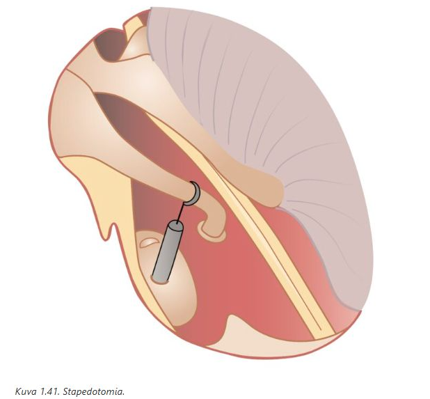
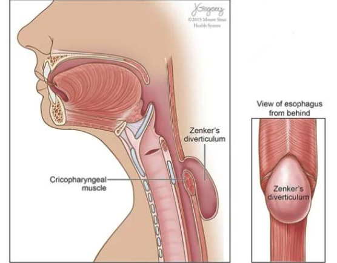
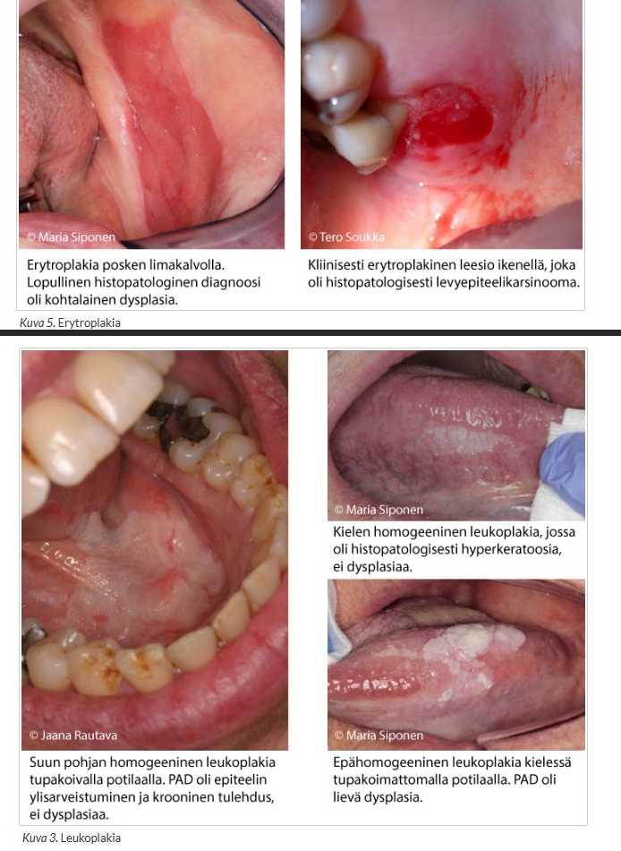

Kappale 8 Helsinki
Helsingin arkistossa on paljon täysin samoja kysymyksiä kuin Turun wikissäkin, joten tähän olen kerännyt vain ne, joita ei ole vielä tullut aikaisemmissa kappaleissa. Voi olla hyvinkin järkevää harjoitella näitäkin kysymyksiä, koska vaikuttaa siltä, että tentit käyttävät kaupunkien välillä ainakin jossain määrin yhteistä pankkia.
Tenteissä on tyypilliseen tapaan 50 kysymystä, joten kaikki sen alittavat lukumäärät johtuvat kysymyksistä, jotka olivat jo aikaisemmin.
8.1 2022
Vuodesta 2022 eteenpäin tentit ovat monivalintatenttejä, sitä ennen enemmän esseetä.
8.1.1 Missä tilanteessa seuraavista ei tulisi epäillä äkillistä kartiolisäkkeen tulehdusta?
- Korvan takaa iho on punoittava ja aristava, korvalehti on hieman kääntynyt ulospäin ja tulehdusarvot ovat kohonneet
- Tärykalvo näyttää terveeltä, mutta korvakäytävässä, korvalehdessä ja korvan takana on turvotusta
- Potilaalla on korvatulehdus ja kaulan imusolmukkeet ovat sillä puolella kipeät ja suurentuneet
- Tärykalvo on puhjennut ja vuotaa märkää
Solution.
dKun tärykalvo puhkeaa, paine välikorvassa purkautuu, ja riski tulehduksen leviämiselle kartiolisäkkeeseen pienenee -> mastoidiitin hoitoon yleensä kuulukin laaja parasenteesi tai tympanostomia. Pelkkä märkävuoto ei viittaa mastoidiittiin, ellei siihen liity korvan takaista punoitusta, turvotusta, aristusta tai korvalehden työntymistä ulospäin.
a: Klassinen oirekuva, vahvin epäily mastoidiitista
b: Korvan takainen turvotus herättää aina epäilyn mastoidiitista
c: Kaulan imusolmukkeiden reaktiivinen suurentuminen viittaa infektion leviämiseen ja voi liittyä mastoidiittiin. Märkä voi mastoidiitissa puhjeta myös kartiolisäkkeen kärjen kautta kaulalle (Bezoldin abskessi), mikä voidaan väärin tulkita imusolmukesuurentumaksi.

8.1.2 Pullealla opettajalle uniapnea
Vastaanotollesi tulee 45-vuotias opettaja, jonka BMI on 35. Puoliso valittaa kovaäänisestä kuorsauksesta. ESS-kyselyssä pisteet 12. Yöpolygrafiassa on lievään, asentoriippuvaiseen, obstruktiiviseen uniapneaan sopiva löydös. AHI on koko yölle laskettuna 9. Nielussa on keskikokoiset tonsillat, uvula kookas ja suulaki laskeutuu alas. Mitä teet?
- Lähetän potilaan suu- ja leukasairauksien yksikköön apneakiskon valmistamista varten
- Lähetän potilaan keuhkotaudeille CPAP-laitehoidon aloitusta varten
- Annan potilaalle ohjeet laihduttamisesta ja kehotan välttämään selkäasennossa nukkumista
- Lähetän potilaan korvaklinikalle arvioon nielurisaleikkausta ja suulakitoimenpidettä varten
Solution.
cPotilaalla on lievä (AHI <15) uniapnea, joka aiheuttaa merkittävää uneliaisuutta (ESS yli 9). Liikapainoisen uniapneapotilaan hoitoon kuuluvat aina painonhallinta ja elämäntapaohjaus. Lievässä uniapneassa laihdutus voi olla riittävä hoito. Jos potilas on vähäoireinen ja yöpolygrafiassa havaitaan lievä uniapnea tai osittainen unenaikainen ylähengitystieahtauma, perusterveydenhuollossa hänet ohjataan laihdutus- ja asentohoitoon.
a: Uniapneaa hoidetaan erityisesti apneakiskolla, jos oirekuva on lievä tai potilas ei sovellu CPAP-hoitoon. Työntää alaleukaa ja kielen lihaksistoa eteen. Mahdollisesti voidaan testata, mutta laihduttaminen on tärkeämpi hoito.
b: CPAP-hoito on uniapnean ensisijainen hoito erityisesti keskivaikeista tai vaikeista oireista kärsivillä ja niillä, joilla AHI on yli 15/h.
d: Ei ole aiheellista lievässä oirekuvassa ainakaan ennen laihduttamisen kokeilemista.8.1.3 6-vuotias lapsi. Äiti saattajana kertoo, että lapsella on ollut flunssamaisen nasaali puheääni hyvin pitkään, mahdollisesti siitä lähtien kun oppi puhumaan. Statuksessa rauhallinen nielu, tonsillat gr2, haarautunut uvula (uvula bifida) ja kovassa suulaessa palpoiden on pieni lovi limakalvon alla.
- Normaalilöydös, ei liity lapsen nasaalisuuteen
- Piilosuulakihalkio, selittää nasaalisuuden
- Tonsillahyperplasia aiheuttaa nasaalisuuden
- Huuli-suulakihalkio, ei liity nasaalisuuteen
Solution.
bSuulaki- ja huuli-suulakihalkiot ovat raskauden ensimmäisellä kolmanneksella syntyviä kehityshäiriöitä. Huuli-suulakihalkiot (cheilognathopalatoschisis) ja pelkät suulakihalkiot ovat kaksi erillistä kehityshäiriötä. Halkiot voivat olla tois- tai molemminpuolisia, osittaisia tai täydellisiä.
Suulakihalkion kliininen kuva vaihtelee piilosuulakihalkiosta (limakalvonalainen halkio) täydelliseen pehmeän ja kovan suulaen halkioon. Joskus suulakihalkio voi olla piilossa suun limakalvon alla. Uvula voi tällöin olla kaksiosainen ja tunnustelemalla voi limakalvon alla tuntea kovan suulaen reunassa halkion. Silloin puhutaan piilohalkiosta.
Suulakihalkiossa suulaen lihaksisto ei toimi normaalisti. Tämä johtaa myös korvatorven toimintahäiriöön, jonka seurauksena välikorva ei ilmastoidu normaalisti. Lähes kaikille suulakihalkiolapsille kehittyy tämän vuoksi liimakorva. Kasvun ja halkion leikkaushoidon avulla välikorvan ilmastoituminen paranee yleensä kouluikään mennessä. Kuulon ja puheenkehityksen vuoksi liimakorvaa hoidetaan tuohon saakka tärykalvoputkituksin.
Ennen suulaen sulkuleikkausta vauvan äännellessä ilmaa ohjautuu tavallista enemmän nenään. Puhuttaessa suulaen tulee sulkea ilmatie nenään muiden äänteiden, paitsi M-, N- ja NG – äänteiden kohdalla. Mikäli nenänielu ei sulkeudu kunnolla, ilmanpaineen nostoa vaativien äänteiden (K, P, T, R, S) tuottaminen ei onnistu napakasti. Piilosuulakihalkiota ei välttämättä havaita varhaislapsuuden aikana, mutta sitä tulee epäillä, jos lapsen puhe on nenäsointista. Mikäli piilohalkio löytyy lapselta, jolla ei ole puheen tai syömisen ongelmia, lisätutkimukset eivät ole tarpeen. Jos lapsen puhe on nenäsointista, hänet on syytä lähettää erikoissairaanhoidon tutkimuksiin, vaikka piilohalkiota ei löytyisikään.
a: Lapsen nasaalisuus ja palpoituva halkio -> ei ole normaalilöydös. Potilaalla on kaksihaarainen suulakikieleke (uvula bifida), joka Yyksittäisenä löydöksenä voi olla merkityksetön (noin 1–2 %:lla väestöstä löytyy), mutta on hyvä muistaa, että se voi liittyä ainoana näkyvänä löydöksenä piilosuulakihalkioon.
c: Tonsillat ovat vain gr 2 (25-50% suunielusta) eivätkä ne aiheuta hypernasaalista puhetta
d: Huuli-suulakihalkio olisi nähtävissä eikä piilossa; halkiot myös nimenomaan liittyvät nasaalisuuteen8.1.4 Äänihuulen polyyppi
- esiintyy usein allergikolla
- paranee useinmiten ilman toimenpiteitä
- voi johtua äänihuulten traumasta
- pitää poistaa dysplasian asteen arvioimiseksi
Solution.
cToispuolisen äänihuulipolyypin taustalla lienee useimmiten äkillinen mekaaninen trauma, esimerkiksi yskän tai rykimisen tai erityisen voimakkaan äänenkäytön aiheuttama verenpurkauma.
a: Kurkunpään polyyppi ei liity allergiseen taipumukseen (kuten usein nenäpolyyppi), vaan se syntyy muilla mekanismeilla.
b: Käytännössä aina hoidetaan kirurgisella poistolla
d: Isommat polyypit eivät katoa oikein itsestään -> poistetaan oireiden hoidoksi, ei dysplasian asteen arvioimiseksi

8.1.5 30-vuotias naisopettaja, harrastaa laulua. Kotona on kaksi lasta (9kk ja 3 v). Äänenkäheys alkoi syksyllä, kun hän palasi töihin äitiysloman jälkeen. Kurkunpää tutkittiin ja äänihuulissa todettiin symmetriset kyhmyt. Potilas kysyy hoitosuunnitelmasta.
- Annat antibioottikuurin ja pyydät kontrolliin kahden kk:n päästä
- Teet lähetteen foniatrian poliklinikkaan, mahdollisesti potilaalle järjestetään ääniterapia
- Laitat potilaalle PPI-lääkkeen kahdeksi kuukaudeksi
- Teet lähetteen korvaklinikkaan kyhmyjen poistoa varten
Solution.
bÄänihuulikyhmyt ilmenevät yleensä bilateraalisina massoina äänihuulen limakalvolla. Ylimääräinen massa äänihuulen limakalvon värähtelevässä osassa aiheuttaa aina käheytymisen. Tämä johtuu ensisijaisesti siitä, että limakalvoaalto ei synny symmetrisesti ja koko värähdyksestä tulee epäsäännöllinen. Toissijaisesti käheys syntyy siitä, että muutos estää ääniraon sulkeutumisen. Kyhmyt syntyvät äänihuuliin kohtaan, jossa mekaaninen rasitus on suurinta (rasitusvamma). Limakalvon värähdyslaajuus on kaikkein suurin äänihuulen etu- ja keskikolmannesten rajalla. Jos ääntä rasitetaan liikaa, syntyy tähän kohtaan ensin mikroverenvuoto ja turvotus. Kroonistuessaan ne muodostavat ylimääräisen fibroottisen kyhmyn subepiteliaaliseen tilaan. Jos ääntä edelleen rasitetaan, alkaa levyepiteeli paksuuntua ja muuttuu keratiinia muodostavaksi. Kyhmyt syntyvät siten limakalvon venytyksestä ja hankauksesta, ja ne ovat periaatteessa aina molemminpuolisia, mutta eivät välttämättä kooltaan symmetrisiä.
Äänihuulikyhmyt ovat yleisimpiä erityisesti kahdelle potilasryhmälle: nuoret joukkupelejä harrastavat pojat ja äänityötä tekevät/muuten kovaääniset nuoret naiset. Äänihuulikyhmyjen aiheuttaja on runsas ja voimakas äänenkäyttö, joka aiheuttaa mikrotraumojen kautta limakalvon paksuuntumista.
Kaikki äänityötä tekevät aikuiset kyhmypotilaat pitää lähettää ääniterapiaan. Kyhmyt katoavat vain rasitusta vähentämällä. Hoidoksi ja uusiutumisen ehkäisyyn puhetyöläiselle äänenvahvistuslaite.
Poikien hoitamiseksi riittää valistus: ei saa huutaa kilpaa. Poikien äänihuulikyhmyt katoavat äänenmurroksen yhteydessä. Jos tytöllä todetaan äänihuulikyhmyt, tämä viittaa yleensä ongelmaan joko limakalvon värähtävässä mekanismissa tai äänenkäyttötavassa. Nämä tytöt ovat usein kuuluvaäänisiä. Tyttöjen tapauksessa kannattaa harkita foniatrista konsultaatiota. On nimittäin tavallista, että ääni tulee myöhemminkin herkästi käheytymään ja kestää huonosti rasitusta
a: Ei ole infektio kyseessä
c: Todennäköisesti kyseessä on äänirasituksen aiheuttamat kyhmyt, ei refluksista johtuva käheys
d: Jos ääniterapia ei auta, osa aikuisten äänihuulikyhmyistä hoidetaan harvoin kirurgisesti.8.1.6 Tytöllä flunssaa ja tympanometriatuloksia
Äiti tuo vastaanotolle 3-vuotiaan tytön, jolla on ollut aiemmin kaksi kertaa välikorvantulehdus. Tytöllä on ollut kolmen päivän ajan flunssaa: nuhaa, lievää yskää ja lämpöä, ja nyt hän on valitellut oikeaa korvaa kipeäksi sekä syönyt vähän huonommin. Äiti on huolissaan siitä, onko taas tullut korvatulehdus. Tutkittaessa yleisvoinniltaan hyväkuntoinen, mutta räkäinen, niiskutteleva lapsi, joka ei oikein malta pitää päätä paikallaan. Nielu on vähän punoittava. Oikea tärykalvo on myös hieman punoittava, liikkuvuuden arviointi ei onnistu. Tympanometrillä tulee C-käyrä. Vasen korva näyttää hieman punoittavalta, mutta tärykalvo liikkuu, tympanogrammissa on A-käyrä. Mitä teet?
- Oikealla on alipainetta. Arvioin, että oireet ovat aika lievät ja kehotan äitiä antamaan lapselle kipulääkettä sekä tulemaan uudelleen, jos oireet pahenevat tai eivät ala lievittyä parissa päivässä
- Koska lapsi on syönyt huonommin, epäilen streptokokin aiheuttamaa nielutulehdusta ja arvelen, että korvakipu heijastuu nielusta. Otan nieluviljelyn ja aloitan penisilliinikuurin.
- Aloitan antibiootin ja lähetän lapsen korvalääkärille tympanostomia-arvioon, koska nyt jo kolmas tulehdus
- Aloitan antibioottikuurin oikeanpuoleiseen korvatulehdukseen ja sovin kontrollin.
Solution.
aKorvien ja tärykalvojen punoitus ilman osoitusta välikorvan eritteisyydestä ei vielä riitä välikorvatulehduksen diagnoosin asettamiseksi. Vasemmalla tärykalvo liikkuu ja tympanogrammi on normaali -> välikorvaeritteisyys käytännössä poissuljettu.
Oikealla korvassa todetaan C-käyrä, joka viittaa siihen, että välikorvassa on alipainetta. Todennäköisimmin syynä on potilaan flunssaoireet, jotka aiheuttavat korvatorven vajaatoimintaa ja siten välikorvan alipainetta.
b: Alle 3-vuotiailla streptokokkinielutulehdukset ovat harvinaisia. Centor-pisteitäkin ajatellen ei olisi aihetta nieludiagnostiikalle, vaikka pisteet ovatkin heikommat käyttöarvoltaan pienillä lapsilla.
c ja d: Kyseessä on flunssaan sopiva kuva, ei tarvitse antibioottihoitoa.8.1.7 Mikä on otoskleroosin hoidossa käytettävä leikkausmenetelmä?
- Stapedotomia
- Inkudoplastia
- Myringotomia
- Malleoplastia
Solution.
aOtoskleroosin aiheuttaman kuuulovian tärkein hoitomuoto on leikkaus. Suomessa tehdään noin 200-300 otoskleroosileikkausta vuodessa. Leikkauksella pyritään korjaamaan jalustimen kiinnittymisen (soikeaan ikkunaan) aiheuttama äänen johtumiseste. Kiinnittynyt jalustin korvataan proteesilla.
Tähän on valittavana kaksi leikkausmenetelmää, stapedektomia ja stapedotomia. Stapedektomiassa jalustin poistetaan kokonaan tai osittain. Avattu soikea sisäkorvaikkuna suljetaan sidekudossiirteellä ja proteesi asetetaan alasimen ja ikkunaa peittävän kalvon väliin. Stapedotomiassa jalustimen haarakkeet poistetaan ja tehdään reikä jalustimen levyyn, minkä jälkeen alasimeen kiinnitettävä mäntäproteesi asetetaan jalustimen levyn aukon läpi noin puolen millimetrin syvyyteen sisäkorvaan. Leikkaus tehdään tavallisesti paikallispuudutuksessa.
Stapedotomia on nykyisin vallitseva leikkausmenetelmä. Pienempi sisäkorva-avaus aiheuttaa vähemmän tasapainohäiriöitä ja pahoinvointia, jolloin potilaat voidaan kotiuttaa sairaalasta yleensä samana päivänä
b: Korjaa alasinluuta (incus) ja käytetään ossikkeliketjun vaurioissa
c: Tärykalvon avaus
d: Vasaran (malleus) korjaus
8.1.8 Suun limakalvo on hyvin verisuonitettu, jonka takia stanssilla otetun näytepalan ottoaluekin paranee yleensä muutamassa päivässä. Näytettä otettaessa on huomioitava
- PAD-purkin huolellisesta käsittelystä steriliteetin säilyttämiseksi
- yleislääkärillä ei yleensä ole tarvittavia erikoisvälineitä saatavilla
- yleensä tikkiä ei tarvita, mutta tarvittaessa se on osattava laittaa
- suun limakalvolta näyte otetaan yleensä erikoissairaanhoidossa
Solution.
cStanssibiopsian jälkeen ei yleensä tarvita ompeleita, mutta joskus vuoto voi olla runsasta ja on osattava laittaa tikki.
a: PAD-purkki ei ole steriili juttu, joten siihen ei pidä koskea jos tekee toimenpiteitä steriilisti. Näytteet tulee tiputtaa purkkiin niin, ettei osu purkkiin välineillä.
b ja d: Näytteet voi ottaa PTH:ssa eikä vaadi mitään erikoisuuksia. Hammaslääkäritkin voivat ottaa näytteitä. Stanssi (4 - 8mm, erityisesti ienalue, suulaki, poski) tai veitsi on yleisin tapa saada näyte.8.1.9 Mitä seuraavista tarvitaan, jos potilaalla todetaan toispuolinen perifeerinen kasvohermohalvaus?
- Audiometria
- Varicella zoster vasta-aineet
- Elektrogustometria
- Parotiksen palpaatio
Solution.
dToispuolinen perifeerinen kasvohermohalvaus vaatii aina tutkimista sen suhteen, että onko sen taustalla tuumori. Kyseessä voi mm. olla kasvohermoa painava kasvain korvasylkirauhasen alueella, koska kasvohermo kulkee sen läpi. Kiireellinen lähete KNK:lle on aiheellinen, jos korvasylkirauhasen palpaatiossa havaitaan resistenssi
a: Audiogrammi kyllä yleensä kuuluu perifeerisen kasvohermohalvauksen tutkimuksiin, mutta ei ole se absoluuttisen tärkein eikä ole rutiinia kaikkialla Suomessa (Varhan alueella kyllä rutiinia). Vaikka idiopaattinen kasvohermohalvaus (Bellin pareesi) ei useimmiten aiheuta merkittävää kuulonalenemaa, audiogrammi auttaa erottamaan idiopaattisen pareesin muista taustasyistä ja voi olla osa kattavaa tutkimusta etenkin, jos oireet ovat epätyypillisiä tai toipuminen viivästyy.
b: VZV kyllä reaktivoituu Ramsay Huntin oireyhtymässä ja voi aiheuttaa kasvohermohalvauksen, mutta diagnoosi on kliininen eikä vasta-aineiden määrityksellä ole merkitystä
c: Tutkii makuaistia; ei vaikuta diagnostiikkaan tai hoitopäätöksiin8.1.10 Lyhyen ajan sisällä vastaanotollasi on käynyt neljä kroonista rinosinuiittia sairastavaa potilasta, joiden kaikkien esitiedot poikkeavat hieman toisistaan. Kenellä seuraavista potilaistasi krooninen rinosinuiitti on potentiaalisesti vaikeahoitoisin?
- Potilaalla, jolla on krooninen ei-polypoottinen rinosinuiitti + astma
- Potilaalla, jolla on astma + allerginen nuha + krooninen polypoottinen rinosinuiitti
- Potilaalla, jolla on krooninen polypoottinen rinosinuiitti + astma + aspiriiniyliherkkyys
- Potilaalla, jolla on ei-polypoottinen krooninen rinosinuiitti + allerginen nuha
Solution.
c8.1.11 Mikä seuraavista väittämistä on VÄÄRIN? Palan tunne eli globus on oire, johon usein liittyy
- oireen provosoituminen tyhjää niellessä
- kivulias tunne kiinteää niellessä
- kaulan ja niskan lihasjäykkyys
- keskikaulan palpoiden todettava aristus
Solution.
bGlobus pharyngeus = Palan, paineen tai epämukavuuden tunne nielussa. Ei nielemiskipua (odynofagia), nielemisvaikeutta (dysfagia) tai painonlaskua
a: Oire esiintyy tyypillisesti ruokailujen välillä tyhjää niellessä ja voi aiheuttaa toistuvasti ilmenevän nieluun takertuneen ruuan tunteen. On tavanomaista, että palan tunne tulee esille tyhjää tai sylkeä nielemällä. Potilaat usein nieleskelevätkin tiheästi joko tunnustellakseen oirettaan tai lievittääkseen kurkun kuivuutta. Syöminen ja juominen helpottavat yleensä oiretta tai siihen ei ruokaillessa kiinnitä huomiota. Erityisestä tämä erottaa oireen dysfagiasta.
c: Globus pharyngeuksen yleisimpiä aiheuttajia ovat juurikin lihasperäiset syyt (niskan, kaulan alueen ja purentalihasten jännitys). Taustalla voi myös olla usein mm. refluksitauti.
d: Palpaatioarkuus voi viitata alueen lihasten jännitykseen ja keskikaulan palpaatiossa tuntuvat asiat ovat muutenkin usein ei-maligneja ja vain normaaleja rakenteita. On hyvä tiedostaa, että nielun palan tunne ilman muita oireita on vain harvoin merkki syöpätaudista. Tutkimuksen mukaan globus-potilaista n. 1% sairastuu neljän vuoden seurannassa pään ja kaulan alueen syöpätautiin eikä näissäkään tapauksissa globus-oireen yhteys syöpätautiin ollut aina selvä.8.1.12 TK-vastaanotollesi tulee 24-vuotias opiskelija kaulalla olevan kyhmyn vuoksi, joka huomannut partaa ajaessa noin kuukautta aiemmin. Kasvutaipumusta ei ole havainnut, mutta on huolestunut. Toteat noin 2 cm kyhmyn oikeassa kilpirauhaslohkossa muun kaulan palpaation ollessa normaali, samoin muu KNK-status on normaali. Mitä teet?
- Lähete kaulan ultraäänitutkimukseen ja ohutneulanäytteeseen
- jos T4v ja TSH ovat normaalit, ei tarvetta jatkotutkimuksille tai kontrolleille
- 10 vrk pitkä empiirinen antibioottihoito
- kontrolli 3 kk kuluttua kasvutaipumuksen selvittämiseksi
Solution.
aEpäilyttävät muutokset kilpirauhasessa (ja yleensä muutenkin pään ja kaulan alueella) tutkitaan ensisijaisesti ultraäänellä ja samalla voidaan ottaa ohutneulanäyt (ONB).
b: Tuumorit voivat olla toimimattomia, normaalit hormonitasot eivät sulje pois neoplasiaa
c: Ei ole viitettä infektiosta
d: Pään ja kaulan alueen tuumorien kanssa on kiire, ei seurata 3 kuukautta8.1.13 Suun pohjan resistenssi
TK-vastaanotollesi tulee 81-vuotias nainen, jolla 3-4 vuoden aikana on esiintynyt suunpohjan turvottelua, myös kipua syödessä ko. alueella, toisinaan lämpöilyä ja tilanne rauhoittunut 7 vrk antibioottikuurilla väliaikaisesti. Kaulalta palpoiden toteat suun pohjassa ko. puolella vähän aristavan resistenssin ja myös kielen alla turvotusta. Submandibulaarirauhanen laskutiehyt auki, ei kiveä palpoiden. Mitä teet?
- 1 kk tulehduskipulääke
- Amoksisilliini-klavulaanihappo tai kefaleksiinikuuri ja tulehduskipulääke 1 kk
- Noin kuukauden antibiootti: amoksisilliini-klavulaanihappo tai kefaleksiinikuuri.
- Lähete erikoissairaanhoitoon
Solution.
d8.1.14 Mitä kalorisella kokeella voidaan tutkia?
- Huimauksen perifeeristä ja sentraalista erotusdiagnostiikkaa
- Posteriorisen kaarikäytävän hyvänlaatuista asentohuimausta
- Tasapainoratojen välistä puolieroa
- Sacculocollista refleksiä.
Solution.
c
Täydellisessä kalorisessa kokeessa kumpaankin korvakäytävään johdetaan vuorotellen lämmintä ja kylmää vettä tai ilmaa. Potilas on selin makuulla pää kallistettuna 30° eteen ja ylös siten, että horisontaalinen kaarikäytävä on pystyasennossa. Näin lämpötilan muutos laukaisee endolymfan liikkeen, joka on lämpimällä (44 °C) ärsykkeellä stimuloivaa ja kylmällä (30 °C) ärsykkeellä inhiboivaa kaarikäytävälle.
Kalorinen reaktio kertoo vestibulaarijärjestelmän tilasta. Jos reaktio on positiivinen eli nystagmusta tai huimausta ilmenee, vestibulaarijärjestelmä on kunnossa. Kalorisen kokeen etu on, että se on varsin helppo suorittaa, ja molemmat korvat voidaan tutkia erikseen. Haittapuolia ovat, että vain horisontaalinen kaarikäytävä on tutkittavissa. Lisäksi potilaan vireystila ja ohimoluun rakenne vaikuttavat vasteisiin.
Laukeava nystagmus rekisteröidään videokameroilla VOG:ssä ja korvien välinen puoliero lasketaan hitaan vaiheen kulmanopeuden tai taajuuden osalta. Menetelmän mukaan 20-30 %:n puolieroa pidetään merkittävänä. Puoliero ei kerro varmuudella, sijaitseeko vika sisäkorvassa, hermossa tai aivorungon tumaketasolla. Molemminpuolisessa tasapainoelimen viassa puoliero ei useinkaan ole merkittävä.
a: Kalorinen koe ei luotettavasti erottele perifeeristä ja sentraalista huimausta eikä kuulu rutiinitutkimuksiin.
b: Kalorisessa kokeessa tutkitaan vaakasuoraa kaarikäytävää ja okulovestibulaarista heijastetta. Dix-Hallpike on posteriorisen BPPV:n diagnostinen testi.
d: Saculocollinen refleksi (tai sakulokollien heijaste) on vestibulaarinen (tasapainoelimen) refleksi, joka ohjaa pään asentoa. Se aktivoituu sisäkorvan sacculuksen eli pallotiehyen aistiessa pään kiihtyvyyttä tai asennon muutosta. Tämä heijaste aiheuttaa nopean niskan lihasten supistumisen pään vakauttamiseksi. Se on osa varhaisia motorisia refleksejä.

8.1.15 Epäilet 19-vuotiaalla kausiluonteista nuhaa sairastavalla potilaalla koivuallergiaa. Millä seuraavista tutkimuksista voit tätä selvittää?
- Seerumin spesifisen IgE:n määrityksellä
- Veren eosinifiilimäärityksellä
- Seerumin kokonais-IgE-määrityksellä
- Epikutaanitesteillä
Solution.
aKausiluonteinen nuha ja selkeä kausivaihtelu viittaa allergeenispesifiseen allergiaan (tässä tapauksessa koivu). Spesifinen IgE (sIgE) mitataan verestä tiettyä allergeenia vastaan, esim. juuri koivun siitepölyä.
b: Eosinofilia voi olla yleinen allergiassa, mutta se ei ole spesifinen
c: Kokonais-IgE voi olla koholla monissa tilanteissa eikä kerro, mihin allergeeniin potilas on herkistynyt
d: Epikutaanitestillä selvitetään allergiseksi epäillyn kosketusihottuman syytä, joka oireilee vähitellen ilmaantuvana kutiavana ihottumana. Puhutaan myös viivästyneen kosketusallergian tutkimuksesta. Tämä on eri asia kuin ihopistokoe eli prick-testi, jota käytetään spesifisten IgE-testien rinnalla ensisijaisena tukimuksena allergisessa nuhassa.8.1.16 Aikuisen uniapneapotilaan kirurgiseen hoitoon EI KUULU
- Septoplastia
- suulaen ja kielentyven kuumennushoito (RFA) ja kieliluun nosto
- hypoglossus stimulaattori
- partiaalinen uvulektomia
Solution.
d (a?)Uvulopalatofaryngoplastiaa ei oikein tehdä enää, koska tulokset eivät ole mairittelevia ja CPAP-hoito on niin hyvää nykyään. Radiotaajuushoitoa on myös käytetty aikaisemmin, mutta nykyään vähemmän.
Ellei uniapnean konservatiivinen hoito (elintapahoidot, uniapneakisko tai CPAP) ole riittävä, potilas ei siedä hoitoa tai hänellä on merkittäviä uniapnealle altistavia nielun tai kasvojen alueen rakenteellisia tekijöitä, voidaan harkita ylähengitysteiden tai kasvojen alueen kirurgiaa. Leikkaus voidaan kohdistaa yhdelle tasolle (esim. nenä, nielu, pehmeä suulaki, kielen kanta) tai samanaikaisesti usealle eri tasolle (monitasokirurgia).
Uniapnean hoidossa voidaan käyttää mmavartavia toimenpiteitä (esim. risaleikkaus, uvulopalatofaryngoplastia (UPPP), leukaosteotomiat), avustavia toimenpiteitä (esim. nenäpolyyppien poisto, nenän väliseinän oikaisu eli septoplastia), ylähengitystiet ohittavia toimenpiteitä (henkitorviavanne).
a: Mallivastauksissa a (septoplastia) on oikea vastaus eli se ei kuuluisi uniapnean kirurgiseen hoitoon, mutta nenähengitystä parantava kirurgia on kyllä yleistä parantamaan maskihoidon toteutumista. Ehkä on ajateltu, että se ei sinänsä korjaa uniapneaa, mutta vain parantaa maskihoidon toteutumista, jonka takia se on laitettu oikeaksi vastaukseksi.
b: Radiotaajuuskirurgialla (RFA) voidaan avartaa ylähengitysteiden ilmatilaa nenän kuorikkojen, pehmeän suulaen ja kielen kannan tasolla.
c: Genioglossus-lihaksen unenaikainen aktivaatio hypoglossus-hermon stimulaatiolla saattaa vähentää hengityskatkoksia keskivaikeaa–vaikeaa uniapneaa sairastavilla aikuisilla avaamalla unen aikana ylähengitysteitä
d: Poistetaan osa uvulasta ja se voi auttaa obstruktiivisissa oireissa8.1.17 Trakeostomoidun potilaan hoidon erityispiirteet.
- Trakeostomiakanyyli ei voi yskiessä nousta pois paikaltaan
- Reiällisellä ns. puhekanyylillä voidaan välttää huonosta nielemisfunktiosta johtuva mahdollinen aspiraatio
- Trakeostomoidun potilaan hengitysilman kostutuksesta on huolehdittava.
- Tukkeutunut trakeostomiakanyyli on syytä puhdistaa imulla pitämällä sisäkanyyli aina paikallaan
Solution.
cTrakeostomian kautta ilma ei kulje nenän tai edes suun kautta, joten se ei kostu ja lämmitä normaaliin tapaan. Kuiva ilma aiheuttaa limakalvojen ärsytystä, paksua limaa ja siten tukkeutumisriskiä -> kostutus on välttämätöntä.
a: Trakeostomiakanyyliä ei ole ommeltu kiinni, vaan se on vain tarrakaulurilla sidottu kaulalle ja voi liikkua ylös alas yskiessä
b: Puhekanyyleilla tarkoitetaan yleensä kuffittomia ja fenestroituja trakeostomiakanyyleita, joiden “selässä” on pieniä aukkoja mahdollistamaan suuren ilmavirtauksen ylähengitysteihin uloshengityksen aikana. Se ei suojaa aspiraatiolta.
d: Jos kanyyli tukkeutuu, on sisäkanyyli otettava pois tarvittaessa.8.1.18 Tuttu kaveri, mutta nyt nielupaiseen avaaminen ei mene samalla tavalla
Terveyskeskuspäivystykseen tulee Matti 28 v., jolla on kurkku ollut toispuoleisesti pahentuen kipeä 4 päivää. Puhe on muuttunut puuromaiseksi ja syömään ja juomaan Matti ei ole pystynyt eilen eikä tänään. Toteat potilaalla selkeän peritonsillaarisen turvotuksen ja tunnistat välittömästi kyseessä olevan nielupaiseen. Informoit potilaan taudista, kerrot paiseen aukaisusta paikallispuudutuksessa ja myös mahdollisuudesta ns. “kuuman vaiheen” nielurisaleikkaukseen. Päädytte yhteisymmärryksessä paiseen avaamiseen paikallispuudutuksessa. Xylocain-suihkepuudutuksen ja Lidocain cum. adrenalin - infiltraatiopuudutuksen jälkeen teet veitsellä viillon peritonsillaarisesti pulleimpaan kohtaan, jonka jälkeen suonipuristimella (I. Crileillä, suom. “Kraileilla”) yrität tylpästi avata paisetta, mutta saaliiksi tulee lähinnä verta. Miten jatkat hoitoa?
- Varmistan riittävän kipulääkityksen ja aloitan Penisilliinin (1 milj. KY x 3 x 10 vrk), todennäköisesti incisio auttaa paiseen paranemisessa vaikka selvää märkää ei tullutkaan. Ohjaan potilaan ottamaan uudelleen yhteyttä, jos oireet eivät helpota.
- Lähetän potilaan päivystyksellisesti sairaalaan KNK-lääkärille, paise saattaa sijaita tavallista posteriorisemmin ja/tai inferiorisemmin, joka joskus vaatii nielurisojen poiston, jotta paise saadaan avattua.
- Varmistan riittävän kipulääkityksen ja aloitan Penisilliinin (1 milj. KY x 3 x 10 vrk) ja teen kiireellisen (1-7 vrk) lähetteen korvalääkärille kiireellistä tonsillektomiaa varten.
- Varmistan riittävän kipulääkityksen ja aloitan potilaalle Penisilliinin (1 milj. KY x 3x x 10 vrk) ja metronidatsolin (400 mg x 3 x 14 vrk) ja yritän avausta uudelleen 1-2 vrk kuluttua, kun paise on riittävästi kypsynyt.
Solution.
b8.1.19 Mikä seuraavista nielurisatoimenpiteisiin liittyvä väittämä pitää paikkaansa?
- Nielurisojen osapoistoon liittyy enemmän jälkivuotoja ja kipuja kuin nielurisojen kokonaispoistoon
- Nielurisojen kokonaispoiston jälkihaittoina voi olla nielun kireyden ja palan tunnetta
- Nielurisojen kokonaispoistoon liittyy suurempi risojen takaisinkasvun riski kuin nielurisojen osapoistoon
- Kitarisaleikkauksesta toipuminen on hyvin kivuliasta, jonka takia se yleensä tehdään lapsille jo pienenä, purentaongelmien ehkäisemiseksi
Solution.
bFibroosin ja arpikudoksen muodostuminen leikkauksen jälkeen voi aiheuttaa kireyden tunnetta ja yleinen ärsytys ja arpikudos nielussa voi aiheuttaa palan tunnetta.
a: Väärin, tämän takia tonsillotomia (osapoisto) on nykyään varsinkin obstruktio-oireiden hoidossa ensisijainen. Tulehdusten takia tehdyissä risaleikkauksissa ensisijainen toimenpide on vieläkin tonsillektomia, vaikka tutkimuksia on käynnissä tonsillotomian käytöstä.
c: Väärin, kokonaispoistossa takaisinkasvu tietysti harvinaisempaa kuin tonsillotomiassa; kummassakaan ei yleensä kasva takaisin alkuperäisen kokoisiksi.
d: Kitarisaleikkauksesta toipuminen voi kyllä olla kivuliasta, mutta sitä ei tehdä purentaongelmien ehkäisemiseksi, vaan jos obstruktio-oireita ilmenee lapsella.8.1.20 Potilaallesi sovitetaan kuulokoje onnistuneesti huonompaan korvaan ja saavutetaan symmetrinen kuulo molempiin korviin. Mikä on paras etu, jonka hän voi tästä saavuttaa?
- Hän kuulee selkeämmin heikkoja ääniä
- Hän kuulee paremmin puhelimessa
- Hän pystyy aistimaan äänen suunnan paremmin
- Hän sietää paremmin melua
Solution.
cKun potilas kuulee molemmilla korvilla, syntyy binauraalinen kuulo. Kuntoutuksessa pyritään aina binauraalikuuloon ja usein tarvitaan kaksi kuulokojetta. Binauraalisessa kuulossa aivot vertaavat ääniaikaa ja äänen voimakkuuseroja molemmissa korvissa ja mahdollistaa äänilähteen suunnan ja etäisyyden hahmottamisen.
a: Toisen korvan hyvä kuulo jo mahdollistaa äänien kuulemisen, symmetrinen kuulo ei auta heikkojen äänien kuulemisessa
b: Puhelimen ääni voidaan yleensä kohdistaa paremmalle korvalle
d: Ei ole selkeä binauraalikuulemisen etu8.1.21 Kysta kaulalla
41-vuotias tupakoimaton mies tulee tk-vastaanotollesi pikkuhiljaa 3-4 viikon aikana vasemmalle kaulalle kasvaneen kyhmyn vuoksi. Palpoiden toteat 2-3 cm kokoisen mobiilin resistenssin leukakulman alla. KNK-status on normaali. Ultraäänitutkimuksessa todetaan leukakulman alla 3 cm kokoinen kysta ja onb-vastauksena lk 1 eli normaalia kystanestettä. Mitä teet?
- Lähete hammaslääkäriin
- Ei kontrollia
- Empiirinen antibioottikuuri 7 vrk:ta
- Lähete erikoissairaanhoitoon
Solution.
d8.1.22 Näet kuvanmukaisen peilitutkimuslöydöksen pitkään tupakoineen naisen kurkunpäässä. Kyseessä on tuumorisuspekti muutos
- Vasemman äänihuulen takaosassa
- oikean äänihuulen etuosassa
- oikean äänihuulen takaosassa
- vasemman äänihuulen etuosassa

Solution.
d8.2 2023
8.2.1 78-vuotias maanviljelijä tulee näyttämään korvalehteään, jonka iholta on viime kuukausina vuotanut verta. Toteat helixin alueella ruven, jonka alla on kraaterimainen punoittava alue. Mitkä ovat tarvittavat tutkimukset ja mikä on jatkolähetteen kiireellisyys?
- PVK, CRP, Thx-kuva, EKG, stanssibiopsia. Jatkolähetteen kiireellisyys PAD-vastauksen perusteella
- Stanssibiopsia. Jatkolähetteen kiireellisyys PAD-vastauksen perusteella
- PVK, CRP, Thx-kuva, EKG, stanssibiopsia. Jatkolähete 7-30 vrk kiireellisyydellä
- Stanssibiopsia. Jatkolähete 1-7 vrk kiireellisyydellä
Solution.
bTyypillinen löydös ihon okasolukasvaimelle tai basalioomalle. Ihosyöpien diagnoosi perustuu anamneesiin, kliinisen kuvaan ja histopatologiseen löydökseen. PAD-vastaus määrittää tarkasti kasvaintyypin, laajuuden ja ohjaa hoidon. Lähetettä ei tarvitse tehä ennen tulosten saapumista.
Rutiininomaisia labroja ja kuvantamisia ei yleensä tarvita, ellei ole syytä epäillä niiden tarpeellisuutta.8.2.2 Kroonisesta nenän tukkoisuudesta kärsivälle 42-vuotiaalle potilaalle tehdään erikoissairaanhoidossa akustinen rinometria sekä rinomanometria tutkimukset. Mikä seuraavista väitteistä pitää paikkansa?
- Rinomanometrialla mitataan nenähengityksen virtausvastusta
- Akustisella rinometrialla mitataan nenähengityksen painetta
- Rinomanometrialla saadaan tietoa mahdollisen nenäontelon kaventuman sijainnista.
- Rinomanometrialla mitataan nenäontelon poikkipinta-alaa
Solution.
aObjektiivisia mittauksia (rinomanometria ja akustinen rinometria) käytetään erityistilanteissa nenähengityksen toiminnan arvioimiseen.
Rinomanometrialla mitataan nenähengityksen virtausvastusta mittaamalla nenän etu- ja takaosan välinen paine-ero ja samanaikainen nenän kautta virtaava ilmamäärä hengityssyklin aikana. Rinomanometriaan perustuvassa rinoresistometriassa saadaan tarkempi käsitys nenän ilmavirtauksen dynamiikasta ja voidaan erotella tarkemmin virtausvastusta aiheuttavia syitä (alakuorikkohypertrofia, rakenteellinen este, valvulainsuffisienssi). Näitä mittauksia käytetään erikoissairaanhoidossa kliinisen tutkimuksen tukena nenän tukkoisuuden ja nenän rakenteellisten ahtaumien objektiiviseen mittaamiseen leikkausarvioinneissa sekä esimerkiksi työperäisen nuhan altistustutkimuksissa.8.2.3 Kuvassa näkyvät äänihuulten kohoumat ovat
- äänihuulen kysta
- äänihuulen papillooma
- äänihuulen kyhmyt
- äänihuulen sulcus

Solution.
cÄänihuulikyhmyt ilmenevät yleensö bilateraalisina kohoumina. Kyhmyt syntyvät äänihuuliin kohtaan, jossa mekaaninen rasitus on suurinta (rasitusvamma) eli yleensä etu- ja keskikolmannesten rajalle (limakalvon värähdyslaajuus on kaikkein suurin siinä).

8.2.4 Mikä seuraavista on todennäköisimmin premaligni löydös kurkunpäässä?
- Erytroplakia
- Papillooma
- Granulooma
- Leukoplakia
Solution.
aErytroplakia = punainen, sileä tai hiukan koholla oleva limakalvomuutos. Usein esiintyy suussa,, huulessa tai larynxissa. Liittyy korkeaan dysplasian ja transformaation riskiin.
b: Kurkunpään papillomatoosi on hyvänlaatuinen sairaus, jonka seurauksena äänihuulien limakalvolle kasvaa pehmeää kudosmassaa. Ylimääräinen massa käheyttää ääntä ja hoitamattomana ahtauttaa hengitystä. Taustalla matalan riskin HPV-infektio (vrt. korkean riskin esim. HPV16 ja 18). Samat virustyypit (HPV 6 ja 11) aiheuttavat sekä kurkunpään papillomatoosin että kondyloomia genitaalialueelle. Ei kovinkaan suurentunutta malignisoitumisriskiä (<1%). Kurkunpään papillomatoosi on varsin harvinainen (ilmaantuvuus on 0,5–2/100 000 vuodessa), vaikka se onkin kurkunpään tavallisin hyvänlaatuinen kasvain
c: Granulooma on tulehduksellinen tai trauman aiheuttama limakalvomassa, ei ole premaligni
d: Premaligni riski on pienempi kuin erytroplakiassa, tosin on erytroplakiaa yleisempää.8.2.5 Mikä seuraavista EI ole tyypillinen kroonisen nielurisatulehduksen oire?
- Jatkuva kurkkukipu
- Nielurisojen peitteet
- Toistuva kurkkukipu
- Halitoosi
Solution.
bOsalle toistuvia tonsilliitteja sairastaneista potilaista kehittyy krooninen nielurisatulehdus, jolle on tyypillistä, että nielu on aaltomaisesti jatkuvasti hieman arka (välillä vähemmän, välillä enemmän) ja lisäksi voidaan todeta joitain tyypillisiä oireita/löydöksiä, kuten pahanhajuinen hengitys (halitoosi), nielurisoista irtoava bakteerisakka (proput) ja kaulan alueen imusolmukkeiden suureneminen ja aristus.
Nielurisat eivät sinänsä ole peitteisiä, vaan niiden kryptissa on kertymää.8.2.6 Mikä seuraavista väittämistä EI PIDÄ paikkansa:
- Kurkunpääsyöpä on yleisempi miehillä
- Kurkunpääsyövän tavallisin oire on käheys
- Kurkunpääsyöpä on diagnosointihetkellä yleensä pitkälle edennyt
- Kurkunpääsyöpä esiintyy tyypillisesti pitkään tupakoineella
Solution.
cKurkunpää voidaan jakaa supraglottiseen (n. 40% syövistä), glottiseen (n. 60%) ja subglotttiseen (vain n. pari prosenttia) alueeseen. Varsinkin glottiset (äänihuulet ja niiden alapinta) tuumorit todetaan yleensä varhaisessa vaiheessa, koska ne aiheuttavat äänen käheyttä helposti. Glottisella alueella imusuonitus on huomattavan vähäistä, etäpesäkkeitä ei juurikaan tavata diagnoosihetkellä harvoin ja ennuste on supraglottista parempi.
Supraglottinen syöpä (alueeseen kuuluu kurkunpään rakenteet äänihuulitasosta ylöspäin epiglottiksen yläreunaan saakka) kyllä diagnosoidaan usein pitkälle edenneenä, koska aiheuttaa vasta myöhään oireita. Kaulan etäpesäkkeiden esiintyvyys diagnoosihetkellä on 25–35 %, koska alueella on runsas veri- ja imusuonitus.
b: Jos ääni muuttuu selvästi ja pysyy käheänä 2-3 viikon ajan, tulee kurkunpää aina tutkia. Karsinooma on yleensä kivuton ja käheys voi usein olla ainoa oire
a ja d: Tupakointi ja alkoholi on tärkeimpiä kurkunpääsyövän riskitekijöitä. Näiden runsas käyttö on yleisempää miehillä. Kurkunpään syöpien ilmaantuvuus on vähentynyt viime vuosikymmeninä tupakoinnin vähentyessä.8.2.7 Mikä seuraavista löydöksistä puoltaa vähiten antibiootin aloitusta välikorvan tulehdukseen?
- Välikorvassa on eritettä, tärykalvon asento on normaali
- Alle 2 vuoden ikä
- Vuoto tärykalvolta
- Molemminpuolinen tulehdus
Solution.
aJos äkillisen välikorvatulehduksen kriteerit täyttyvät, suositellaan pääsääntöisesti antibioottihoitoa, koska osalla lapsista antibiootti nopeuttaa eritteen häviämistä ja nopeuttaa oireiden häviämistä. Erite häviää kuitenkin valtaosalla myös ilman antibioottihoitoa muutamassa viikossa.
Yksilöllisesti sovellettavia antibiootin tarvetta ennustavia tekijöitä ei toistaiseksi tunneta. On kuitenkin esitetty, että alle 2 vuoden ikä, tärykalvon pullotus, molemminpuolinen tulehdus ja vuoto tärykalvolta puoltaisivat antibioottihoidon aloitusta8.2.8 61-vuotias Irma kärsii uniapneaoireyhtymästä. Hänen BMI on 22. Mikä seuraavista väittämistä hänen kohdallaan EI PIDÄ paikkaansa?
- Irman yöuni on katkonaista, mikä voi johtua havahtumisista, hikoilusta tai lisääntyneestä virtsaamistarpeesta yön aikana
- Irma kuorsaa katkonaisesti. Katkoksien aikana hänen rintakehänsä tekee hengitysliikkeitä, mutta ilma kulkee huonosti
- Päivisin Irman on hankala keskittyä töihin ja hän unohtelee asioita
- Irma ei voi kärsiä uniapneasta, koska hänen BMI on normaali
Solution.
d8.2.9 Epäilet 20-vuotiaalla naisella allergista nuhaa. Mikä seuraavista EI ole allergisen nuhan hoitomuoto?
- Ipratropiumbromidi nenäsuihke
- Montelukasti p.o.
- Natriumkromoglikaatti nenäsuihke
- Immunoterapia
Solution.
aNuhapotilas voi hyötyä ipratropiumsuihkeesta, mikäli ei-allergisen nuhan pääoireena on runsas ja kirkas nuhaerite; eikä ole tässäkään tapauksessa ensisijainen. Iäkkäillä potilailla on myös syytä muistaa antikolinergisen lääkityksen haitat ja vasta-aiheet.
b: Leukotrieeniantagonistit (esim. montelukasti) ovat allergisen nuhan ensilinjan hoitoa erityisesti silloin, kun potilaalla on myös astma.
c: Natriumkromoglikaattia sisältävä nenäsumute (esim. Lomudal Nasal tai Glinor) on allergisen nuhan hoitoon tarkoitettu lääke. Se estää histamiinin vapautumista, vähentäen tehokkaasti aivastelua, kutinaa ja nenän vuotamista.
d: Immunoterapialla yleensä viitataan siedätyshoitoon. Sitä voidaan harkita, jos muut hoidot eivät auta.8.2.10 Potilaalla on ollut toistuvasti korvatulehduksia parin viime vuoden aikana ja hänelle on määrätty useampi antibioottikuuri. Kuulokin tuntuu heikentynyneen. Tärykalvo on tämännäköinen (ks. kuva). Mitä tautia epäilet ja mitä teet?
- Nekrotisoiva otiitti, päivystyslähete korvalääkärille
- Syöpä korvassa, kiireellinen lähete korvalääkärille
- Kolesteatooma, lähetän korvalääkärille normaalikiireellisyydelläa.
- Toistuvasta antibiootista aiheutunut sienitulehdus. Klotrimatsolitippakuuri 2 viikkoa ja kontrolli.

Solution.
cKrooniseen välikorvatulehdukseen voi liittyä kolesteatooma eli helmiäinen (otitis media chronica cum cholesteatomate), jossa kerrostuvaa, destruoivaa keratiinia tuottavaa levyepiteeliä on välikorvan ja/tai kartiolisäkkeen alueella. Taustalla on usein reunanmyötäinen tärykalvoperforaatio, jonka kautta tärykalvon tai korvakäytävän ihon epidermistä kasvaa välikorvan puolelle. Toinen helmiäisen syntymekanismi liittyy korvatorven toimintahäiriöön, joka aikaansaa välikorvan alipainetilan ja erityisesti tärykalvon yläosan ohuimmalle alueelle (pars flaccida, Shrapnellin membraani) syntyy retraktiotasku, jonka sisään kertyy jatkuvasti keratiinia, joka paineen ja tulehduksen vaikutuksesta leviää edelleen välikorvaan.
Potilasta tutkittaessa on tärkeää kiinnittää huomio tärykalvon yläosan (pars flaccida) mahdolliseen pussimaiseen sisään vetäytymiseen ja keratiinikarstan muodostumiseen. Tärykalvon reunanmyötäisiin perforaatioihin liittyy huomattava kolesteatooman kehittymisen riski. Kolesteatoomaa epäiltäessä potilas on syytä lähettää KNK-yksikköön, missä korva puhdistetaan, keratiini poistetaan mahdollisuuksien mukaan ja tulehdus pyritään rauhoittamaan paikallishoidoin. Tämän jälkeen helmiäisen laajuudesta riippuen tehdään joko paikallinen puhdistusleikkaus ja kuuloluuketjun korjaus (atticotomia ja tympanoplastia) korvakäytävän kautta, tai laajempi ns. radikaalileikkaus. Siinä kolesteatooman täydelliseksi poistamiseksi porataan pois kartiolisäkkeen lokerosto ja korvakäytävän luinen takaseinä. Samalla korjataan kuuloluuketju joko potilaan omia kuuloluita käyttäen tai keinoproteesilla ja paikataan tärykalvo.
a: Otitis externa necroticansin (NOE, maligni eksterni otiitti, MOE) otoskopiassa voidaan joskus todeta lähes patognomonisena löydöksenä granulaatiokudosta korvakäytävän inferiorisessa osassa luu-rustojunktiossa, mutta ei siis tärykalvolla tai sen takana. Kyseessä on tyypillisesti invasiivisen Pseudomonas aeruginosan aiheuttama mahdollisesti fataali kallonpohjaan invasoiva infektio. Tyypillisintä immuunipuutteisella ja diabeettisellä potilaalla; tyyppipotilas on vanha diabeetikko, jolla korvakipua (otalgia), märkäeritettä korvasta ja kipua pureskellessa.
b: Syöpä korvassa on todella harvinainen
d: Ei näytä sienikasvulta8.2.11 Uniapnean kirurgista hoitoa voidaan harkita,
- koska lähes kaikki potilaan hyötyvät siitä
- jos CPAP- tai apneakiskohoito epäonnistuvat
- jos potilas ei halua CPAP-laitetta sen kuljettamiseen liittyvien hankaluuksien vuoksi
- koska CPAP-hoitoa pystyy käyttämään vain pieni osa potilaista
Solution.
bKirurginen hoito aikuisen obstruktiiviseen uniapneaan on yleensä vasta aiheellista, jos konservatiiviset hoidot eivät toimi tai vaativat toimiakseen kirurgiaa.
a: Teho vaihtelee huomattavasti ja varsinkin eri leikkausten välillä.
c: Ei riittävä peruste
d: Suurin osa potilaista pystyy käyttämään CPAP:ia8.2.12 Toteat 45-vuotiaalla puoli vuotta nenän tukkoisuudesta kärsineellä miehellä nenässä molemmin puolin polyyppejä. Mikä on polyyppi?
- Krooniseen rinosinuiittiin liittyvä hyvänlaatuinen kasvain nenässä
- Krooniseen rinosinuiittiin liittyvä tulehtuneen limakalvon pullistuma
- Nenän limakalvomuutos, johon liittyy malignisoitumisriski.
- Neoplastinen muutos nenän limakalvolla
Solution.
bPolypoosi on kroonisen rinosinuiitin yksi alatyyppi. Kroonisen rinosinuiitin esiintyvyys on noin 10 %. Se jaetaan kahteen pääfenotyyppiin: ei-polypoottiseen (noin 7 %) ja polypoottiseen (noin 3 %) krooniseen rinosinuiittiin.
Polyypit ovat muuta limakalvoa vaaleampia, imukärjellä tunnustellen pehmeitä ja liikkuvia eikä niissä ole kosketustuntoa. Polyyppejä on molemminpuolisesti! Ala- ja keskikuorikon välissä olevat polyypit ovat peräisin etummaisista seulalokeroista. Nenän takaosan polyypit, jotka voivat tukkia koana-aukkoja, ovat peräisin joko taaemmista seulalokeroista tai poskiontelosta (antrokoanaalipolyyppi).
a, c ja d: Ei ole neoplastinen muutos tai tuumori -> ei malignisoitumisriskiä8.2.13 Korvakäytävätulehdus ei lähde parantumaan
Olet todennut potilaallasi korvakäytäväntulehduksen ja aloittanut kliokinoli-flumetasonipivalaatti (Locacorten-Vioform®) -korvatipat. Potilas tulee neljän päivän päästä uudestaan ja sanoo että oireet eivät ole lähteneet helpottumaan. Korvalehden iho on siisti, korvakäytävä on edelleen turpea ja kostea, tärykalvo näkyy, on ehkä hieman samea ja “ruttuisen” näköinen mutta liikkuu hyvin. Mitä teet mikrobiviljelyn ottamisen jälkeen?
- Lähetän potilaan korvalääkärin hoitoon
- Paikallishoito ei ole riittävää. Aloitan korvakäytävän huuhtelut säännöllisesti 1-2 päivän välein ja vaihdan myös korvatipat siprofloksasiini-hydrokortisoni -tippaan (Ciproxin-Hydrocortison®), kyseessä voi olla Pseudomonas aeruginosan aiheuttama tulehdus.
- Epäilen tärykalvon tulehdusta ja tehostan hoitoa aloittamalla suun kautta kefaleksiini 750 mg po x 2 x 7 vrk po. antibioottikuurin.
- Tippa ei ole tarpeeksi laajakirjoinen, vaihdan tipan siprofloksasiini-hydrokortisoni -tippaan (Ciproxin-Hydrocortison®) ja kehotan potilasta välttämään korvakäytävän kaivelua.
Solution.
bAkuutin korvakäytävätulehduksen (AOE) hoidossa puhdistuksen jälkeen potilaalle annetaan kotiin korvatippavalmiste, joka voi lievässä tapauksessa olla vain antiseptinen (boorihappo+sprii) tai vaikeammassa tulehduksessa mikrobilääke+glukokortikoidi. Korvakäytäväeritteestä otetaan yleensä Vasta tulehduksen pitkittyessä (2-7vrk kohdalla vaikeusasteeta riippuen) näytteet bakteeri- ja sieniviljelyyn, ei tarvitse ottaa ensimmäisellä vastaanotolla.
Ennen tulosten valmistumista voidaan aloittaa empiirisesti siprofloksasiini-hydrokortisoni -tipat, koska äkillisen korvakäytävätulehduksen (AOE) tavallisimmat aiheuttajabakteerit ovat Pseudomonas aeruginosa ja Staphylococcus aureus. Korvakäytävän putsaaminen on myös tärkeä osa hoitoa.
a: Ei tarvitse vielä, hoitoa voidaan yrittää tehostaa TK:ssa ensin
c: Tärykalvon liikkuvuus on normaali → ei välikorvatulehdusta
d: Ei mainintaa säännöllisestä käytävän putsaamisesta.8.3 Toistuvia ponkiontelotulehduksia
47-vuotias nainen on juuri käynyt nenän sivuonteloiden röntgenkuvauksessa toistuvien poskiontelotulehdusten vuoksi. Pariin otteeseen niiden yhteydessä on tehty myös punktioita, joissa märkää saatu saaliiksi. Kuvissa todetaan limakalvoturvotusta poskionteloissa. Potilas on viime aikoina ollut subjektiivisesti aika lailla oireeton. Miten tulkitset tilanteen?
- Potilas on juuri sairastanut akuutin rinosinuiitin, minkä jäljiltä sinuksissa on vielä tulehdusta
- Tulkitset röntgenkuvien muutokset limakalvokystiksi, joilla ei ole kliinistä merkitystä
- Potilaalla on lieväoireinen krooninen rinosinuiitti, mihin liittyen potilaalla on toistuvia akuutteja poskiontelotulehduksia mm. alentuneen mukosiliaarifunktion vuoksi
- Sinusten röntgenkuvaus on epäluotettava tutkimus. Tulkitset löydöksen artefaktaksi.
Solution.
cToistuvat poskiontelotulehdukset, joista on saatu märkää punktioissa → todistaa bakteeriperäiset episodit. Limakalvoturvotus kuvissa johtuu usein pitkäaikaisesta inflammaatiosta (aiheuttaa heikentynyttä mukosiliaarista kuljetusta ja altistaa akutisoitumisjaksoille) tai polyypeista.
a: Potilas on ollut viime aikoina aika oireeton
b: Potilaalla on ollut todistetusti akuutteja bakteeriperäisiä poskiontelotulehduksia; kystista tulisi enemmänkin kirkasta oljenkeltaista nestettä eikä märkää
d: Röntgenkuva ei yksin diagnosoi tilannetta, mutta kyllä osoittaa mönjät/nesteen onteloissa; ei ole todennäköisesti artefaktaa.8.3.1 28-vuotias nainen tulee vastaanotolle flunssaoireiston vuoksi. Potilas kertoo sairastavansa 6-8 flunssaa vuosittain ja on tähän kyllästynyt. Mikä seuraavista on tehokkain tapa flunssan ennaltaehkäisyyn?
- Oseltamiviiri
- Sinkki
- C-vitamiini
- Käsien pesu
Solution.
dFlunssa (ylähengitysteiden virusinfektio) leviää pääasiassa kosketus- (kädet → nenä/suu/silmät) ja pisaratartuntana -> Käsihygienia on tutkitusti tehokkain yksittäinen keino flunssan ennaltaehkäisyssä, sekä väestötasolla että yksilöllisesti.
a: Tehoaa vain influenssavirukseen, ei tavallisiin flunssaviruksiin (rhinovirus, koronavirus, adenovirus jne.).
b: Sinkki saattaa lyhentää flunssan kestoa ja lievittää oireita, jos käyttö aloitetaan heti ensioireiden ilmaannuttua; käyttö epidemian aikana voi myös ehkäistä tartuntoja, mutta ei yhtä tehokkaasti kuin käsihygienia
c: Mahdollisesti voi lyhentää oireita ja ehkäistä tapauksia, mutta ei yhtä tehokkaasti kuin käsihygienia8.3.2 Mitä oireita voi liittyä Bellin pareesiin?
- Hajuaistin heikkeneminen
- Silmän kyynelvuoto
- Vain toinen suupieli roikkuu, muutoin miimiikka on symmetristä.
- Kasvojen tuntoaistin alentuminen
Solution.
bBellin pareesi = äkillinen idiopaattinen perifeerinen kasvohermohalvaus (n. facialis). Halvauksen yksi oireista on se, että silmä ei sulkeudu kunnolla (n. facialis hermottaa m. orbicularis oculi, joka sulkee silmän). Tämä voi aiheuttaa silmän ärsyyntymistä ja vaikeutta kyynelnesteen jakautumisessa normaalisti silmän pinnalle -> valuu poskelle.
Silmän sulkeutumisen häiriöstä (ja myös siitä, että kasvohermo hermottaa kyynelrauhasta) johtuen, silmä on yleensä hyvin kuiva perifeerisessä kasvohermohalvauksessa.
a: Hajuaisti = n. olfactorius (I aivohermo). Facialispaaresi taas häiritsee makuaistia, koska se hermottaa anteriorisen 2/3 kielestä makuaistin suhteen.
c: Tämä kuvaa sentraalista kasvohermohalvausta; perifeerisessä pareesissa koko kasvopuolisko leesion puolella menettää motorisen toiminnan
d: Kasvojen tunto = n. trigeminus (V aivohermo)8.3.3 Ruuan takaisinvirtausta
78-vuotias Reino on jo usean vuoden ajan kärsinyt pikkuhiljaa pahenevasta nielemisvaivasta. Ruuan nielaisu on vaivalloista ja hän on hiljalleen siirtynyt pehmeämpiin ruokiin. Painossa ei ole tapahtunut muutosta mutta viime aikoina on alkanut esiintyä ruuan takaisinvirtausta suuhun ruokailun jälkeen. Mitä teet? Valitse paras vaihtoehto.
- Lähetän potilaan KNK-klinikkaan jäykällä tähystimellä tehtävää tutkimusta varten, koska se on ensisijainen tutkimusmenetelmä epäiltäessä ruokatorven yläsulkijalihaksen toimintahäiriötä
- Lähetän potilaan KNK-klinikkaan ruokatorven varjoainetutkimukseen, koska regurgitaatio viittaa Zenkerin divertikkeliin
- Lähetän potilaan gastroesofagoskopiaan, koska potilaan anamneesi huomioiden ruokatorven pahanlaatuinen tauti on mahdollinen
- Lähetän potilaan kaularangan röntgentutkimukseen, koska kaulanrangan osteofyytti voi estää kookkaiden palojen nielemisen
Solution.
bVanhalla ihmisillä (Zenkerin divertikkeli ilmenee tyypillisesti vanhoilla miehillä) pitkään hitaasti paheneva nielemisvaikeus erityisesti nielemisen aikaisessa vaiheessa sekä ruoan takaisinvirtausta suuhun ruokailun jälkeen (regurgitaatio). Tämä on tyypillinen oirekuva Zenkerin divertikkelille. Potilaalla ei myöskään ole merkittäviä punaisia lippuja maligniteetin suhteen.
Zenkerin divertikkeli on pseudodivertikkeli, joka klassisesti ilmenee Killianin kolmion alueella, jota rajaavat kilpirusto-nielulihas (m. thyreopharyngeus) ja rengasrustolihas (ruokatorven yläkuroja (UES), m. cricopharyngeus). Yleensä taustalla on ikääntymisen (presbyfagia) aiheuttama m. cricopharyngeuksen motorinen dysfunktio (epänormaali spasmeilu tai vähentynyt relaksaatio) -> kohonnut ruokatorven luumeninsisäinen paine -> herniaatio luontaisesti heikon kohdan läpi (Killianin kolmio). Zenkerin divertikkeli painaa ylempää sulkijalihasta ja estää sen relaksaatiota -> orofaryngeaalinen dysfagia. Ruokaa voi kertyä divertikkeliin ja sieltä se myöhemmin regurgitoituu takaisin suuhun.
Zenkerin divertikkelin diagnoosi varmistuu ruokatorven varjoainetutkimuksella.

8.3.4 Alentunut kuulo pienellä pojalla
Vastaanotolle tuodaan 4-vuotias poika. Hänellä on pienempänä ollut korvatulehduksia, mutta ei enää viime aikoina. Noin kolme kuukautta sitten sairastetun flunssan jälkeen hänen kuuloaan on epäilty alentuneeksi. Korvissa molemmat tärykalvot näyttävät harmailta, mitään punoitusta ei ole. Tärykalvot liikkuvat jäykästi. Tympanometrian tulos näyttää tältä molemmissa korvissa: Miten toimit? Valitse mielestäsi oikea vaihtoehto.
- Totean, että molemmissa korvissa on todennäköisesti liimakorva, mikä selittää kuulonaleneman. Teen lähetteen tympanostomiaan
- Epäily alentuneesta kuulosta on aina aihe jatkoselvityksiin, joten teen lähetteen kuulokeskukseen
- Epäilen, että tympanometriassa on tullut virheellinen tulos, koska tärykalvot näyttävät normaaleilta. Varaan kuulonmittaukseen ajan neuvolan kautta ja pyydän lapsen samalla käynnillä kontrolliin.
- Koska oireet ovat lievät, tilannetta voi vielä hyvin seurata ja sovin kontrollin kolmen kuukauden päähän

Solution.
aOn todettavissa tasainen B-käyrä tympanometriassa ja se viittaa yleensä eritteisyyteen välikorvassa (tosin voi myös johtua esim. tärykalvoreiästä tai avoimista ilmastointiputkista). Todennäköisesti potilaalla on siis jo aikaisempien välikorvatulehdusten ja viimeistään kolme kuukautta sitten sairastetun flunssan yhteydessä jäänyt eritettä pidemmäksi aikaa välikorvaan, vaikka nyt ei olekaan enää akuuttia infektiota päällä (sekretorinen otiitti). Potilaalla on nyt todennäköisesti ollut yli 3kk eritettä välikorvissa ja tätä kutsutaan “liimakorvaksi”.
Jos välikorvassa on eritettä yhtäjaksoisesti yli 3 kk:n ajan, lapsi lähetetään korvalääkärille arvioon. Hoitopäätös on aina yksilöllinen. Yleensä arvioidaan tarve tärykalvoputkitukselle. Hoidon pääasiallinen indikaatio on kuulonalenema. Mikäli lapsella on tämän lisäksi ollut myös useita äkillisiä oireellisia välikorvatulehduksia, se puoltaa ilmastointiputken asettamista.
b: Syy kuulonalenemalle on aika selkeä -> voidaan lähettää korvalääkärille tympanostomia-arvioon.
c: Ei kannata epäillä näin, kun tilanne viittaa selkeästi liimakorvaan. Jotkut tympanometrit kyllä piirtävät B-käyrän myös siinä tapauksessa, jos mittaus on epäonnistunut.
d: Joskus liimakorvaa voidaan seurata pidempäänkin, mutta potilaan tilanteessa ei. Seuranta-aika voi mahdollisesti olla pidempi (6 kk), jos
liimakorva on toispuolinen
tympanogrammi on alipaineinen, mutta kuitenkin huipukas (C-käyrä, välikorva ei ole kokonaan nesteen täyttämä)
kesä on alkamassa (spontaani paraneminen on yleistä, kun infektioaltistus on vähäinen).8.3.5 Dix-Hallpiken kokeella voidaan diagnosoida
- aivorungon verenkiertohäiriö
- lateraalisen kaarikäytävän hyvänlaatuinen asentohuimaus
- hyvänlaatuinen posteriorisen kaarikäytävän asentohuimaus
- vestibulaarihermon toiminnan sammuminen
Solution.
cHyvänlaatuisessa asentohuimauksessa (HAH, BPPV) oireita aiheuttavat otoliitit tyypillisesti (85-95%) sijaitsevat posteriorisessa kaarikäytävässä. Dix-Hallpiken testi suoritetaan siten, että:
- Potilas istuu tutkimuspöydällä jalat suorina
- Käännä potilaan pää n. 45 astetta testattavalle puolelle
- Potilas ohjataan makuuasentoon niin, että lopulta pää on tutkimuspöydän yli ja sitä tuetaan 30 asteen ekstensiossa
- Katso silmiä ja arvioi nystagmusta
Tyypillisesti havaitaan sekuntien viive, jonka jälkeen kiertohuimaus + nystagmus, joka on vertikaalisesti ylöspäin lyövä ja sairaan korvan (alaspäin osoittavan korvan) puolelle kiertävä; kestää tavallisesti n. 10-30s. Positiivinen testi osoittaa yleensä posteriorisen kaarikäytävän hyvälaatuisen asentohuimauksen (BPPV)
a ja d: Sentraalinen huimaus ja vestibulaarineuriitti erotetaan toisistaan HINTS plus -testipaketilla
b: Otoliitit voivat myös harvemmin olla horisontaalisessa kaarikäytävässä, jolloin tyypillisesti käytettävä Dix-Hallpiken testi voi olla negatiivinen tai epätyypillinen -> voi harkita horisontaalisen BPPV:n mahdollisuutta ja tarvittaessa testata supine roll -testin (tai Rahkon WRW-testin)
Harvinaisin versio on anteriorisen (superiorisen) kaarikäytävän BPPV. Voidaan epäillä, jos Dix-Hallpiken testissä nystagmuksen suunta on päinvastainen, eli se lyö kaudaalisesti ja kiertokomponentti on ylempää korvaa kohti.


8.4 2024
8.4.1 Hyvänlaatuiseen asentohuimaukseen sopivat:
- Huimaus, tinnitus ja kuulonalenema
- Huimaus ja spontaani nystagmus
- Huimaus ja tinnitus
- Asennonmuutoksiin liittyvä huimaus ja nystagmus
Solution.
dOtoliitteja utriculuksesta (soikea rakkula) kulkee semisirkulaarisiin kanaaleihin ja aiheuttaa tuntokarvojen ei-toivottua stimulaatiota -> Huimausta koetaan tyypillisesti pään asennonmuutoksissa otoliittien liikkuessa; erityisesti vuoteeseen käydessä tai vuoteessa käännyttäessä. Joskus kohtaus voi kestää jopa ad 2 min, mutta yleensä on alle 1min. Kohtausten välillä potilas on tyypillisesti aika oireeton ilman pään liikuttamista, mutta jotkut kokevat kohtausten välilläkin lievää instabiliteetin tunnetta.
a: Ei tyypillistä; mahdollisesti kuvailee esim. Menieren tautia
b: Ei spontaania nystagmusta
c: Ei tinnitusta8.4.2 Äänihuulten atrofia: Mikä seuraavista väittämistä on oikein?
- Tavallisempi puheammattia tekevällä.
- Tupakointi on äänihuuliatrofian riskitekijä.
- Voidaan hoitaa väliaikaisesti botox-injektiolla.
- Tyypillistä äänihuulien ohentuminen.
Solution.
dÄänihuulten atrofia (presbyfonia (ikäkäheys) / atrofinen dysfonia) tarkoittaa nimenomaan sitä, että äänihuulet ohenevat -> äänihuulten sulku jää vajaaksi -> ääni on heikko, puhallusmainen, väsyvä.
a: Äänihuulten atrofia liittyy tyypillisesti ikääntymiseen. Puheammateissa yleisempää on mm. äänihuulikyhmyt
b: Tupakointi aiheuttaa ennemmin kroonista laryngiittia ja Reinken ödeemaa, ei varsinaisesti äänihuulten atrofiaa.
c: Botox heikentää lihastoimintaa ja voidaan käyttää spasmodisessa dysfoniassa. Atrofiassa ongelma on jo valmiiksi liian heikko sulku, ei liiallinen lihastyö. Yleensä hoitoa ei tarvita, mutta tilanteissa, joissa äänihuulen atrofia johtaa hankalaan kommunikaatio-ongelmaan, on atrofiaa viime vuosina lisääntyvässä määrin hoidettu äänihuulia täyttävällä injektiolla, jolloin äänihuulet saavat takaisin menettämäänsä massaa.8.4.3 Tuttu nainen, nyt hieman erilainen näkymä korvassa
Potilaaksesi tulee 47-vuotias nainen, jolla vaivana on ollut pitkäaikaista korvavaivaa. Korva on koko ajan jotenkin oudon tuntuinen ja tukkoinen, vaikka korvalla kuulee hyvin. Korvasta ei vuoda mitään. Korvaa kutisee, mutta potilas sanoo lopettaneensa korvan kaivamisen pumpulipuikoilla kun lehdessä oli lukenut että sitä ei suositella. Katsoessasi korvaan näet vaaleaa vanun näköistä haituvaa korvakäytävän seinämillä. Tärykalvo on rauhallinen, herkkäliikkeinen, Rinne +/+, Weber <->. Mikä on työdiagnoosi ennen mikrobiviljelyä, miten hoidat?
- Kyseessä on krooninen korvakäytäväntulehdus ja kolesteatooma, lähetän potilaan korvalääkärille.
- Potilas valehtelee ja oikeasti kaivaa korvaa topsipuikolla. Poistan haituvat korvapihdeillä ja pidän potilaalle puhuttelun manipulaation välttämisestä.
- Kyseessä on sienen aiheuttama korvakäytäväntulehdus, huuhdon korvan, aloitan boorihappotipat
- Kyseessä on krooninen korvakäytäväntulehdus, aloitan kortisonitipat 14 vrk kuurin, jonka jälkeen suosittelen potilasta kosteuttamaan korvaa Vaxol-suihkeella
Solution.
cOtoskopiassa vaaleaa, vanun / haituvan näköistä rihmastoa korvakäytävän seinämillä viittaa vahvasti sieni-infektioon. Potilas on myös todennäköisesti aikaisemmin kaivanut korvaansa paljon, mikä altistaa välikorvatulehduksille ja sieni-infektioille.
Oikea hoito korvakäytäväinfektioissa on korvakäytävän puhdistus (todella tärkeä osa hoitoa) ja paikallishoito, aluksi esim. boorihappotipat (ei siis tarvitse heti aloittaa sienilääkkeitä tai bakteeri-infektioissa antibiootteja, jos tulehdus on lievä). Vasta tulehduksen pitkittyessä (2-7vrk kohdalla vaikeusasteeta riippuen) korvakäytäväeritteestä otetaan näytteet bakteeri- ja sieniviljelyyn. Paikallishoitoa muutetaan ja suunnataan viljelyvastausten mukaisesti8.4.4 Mikä seuraavista väittämistä El pidä paikkaansa?
- Sosiaalisesti häiritsevää kuorsausta voidaan hoitaa apneakiskolla, jota varten potilas pitää lähettää suu- ja leukasairauksien yksikköön
- Sosiaalisesti häiritsevä kuorsaus voi johtua nenän tukkoisuudesta, minkä takia sitä täytyy tarvittaessa hoitaa nenäkortikoidisuihkeilla
- Jos sosiaalisesta häiritsevästä kuorsauksesta kärsivällä potilaalla on päiväväsymysoireita, tehdään yöpolygrafia perusterveydenhuollossa
- Sosiaalisesti häiritsevän kuorsauksen hoito on ensisijaisesti konservatiivista, kuten painonhallintaa ja selkäasennon välttämistä
Solution.
aArvio apneakiskon mahdollisesta hyödystä kuorsaavalle potilaalle ilman uniapneaa tehdään vain yksityissektorilla. Samoin CPAP ei ole korvattavissa ilman uniapneaa.
b: Kuorsauksen hoito on yleensä konservatiivista; tarvittaessa nenän tukkoisuuden hoito (nenäglukokortikoidi ja kostutussuihkeet)
c: Päiväväsymysoireet (arvioitu ESS-kyselyllä) voivat viitata uniapneaan -> ensisijainen diagnostinen tutkimus on PTH:ssa suoritettava yöpolygrafia.
d: Aikuispotilaiden kuorsauksen hoito on ensisijaisesti elintapahoitoa. Tarvittaessa painonpudotus, tupakoinnin välttäminen, uni- ja rauhoittavien lääkkeiden sekä alkoholin välttäminen ennen nukkumaanmenoa, asentohoito (selinmakuun välttäminen).8.4.5 Potilaalla on sosiaalisesti häiritsevä halitoosi, eli pahanhajuinen hengitys. Mitä kotikonstia voit suositella ensisijaisesti?
- Suuvesien käyttö
- Suu- ja hammashygienian tehostaminen
- Suolavedellä kurlaaminen
- Maitotuotteiden välttäminen
Solution.
bSosiaalisesti häiritsevä halitoosi on valtaosassa tapauksista peräisin huonosta suuhygieniasta, ei nielusta eikä ruoansulatuskanavasta.
a: Suuvedet peittävät hajua vain väliaikaisesti ja alkoholia sisältävät suuvedet voivat myös olla haitallisia (lisäävät suusyövän riskiä esimerkiksi).
c: Voi auttaa hetkellisesti nieluoireisiin, mutta ei vaikuta merkittävästi suuperäiseen halitoosiin
d: Ei ole näyttöä, että maitotuotteet olisivat tavallinen halitoosin syy8.4.6 Mikä seuraavista nielurisojen poistoa koskevista väittämistä pitää paikkansa?
- Toimenpide tehdään lähinnä lasten obstruktiivisten risaongelmien hoitoon
- Aikuispotilailla toimenpiteen voi suorittaa nenän kautta tähystämällä
- Lapsipotilailla toimenpide on turvallisinta tehdä paikallispuudutuksessa.
- Aikuispotilailla nielurisakudos poistetaan yleensä kokonaan risakapselin myötäisesti
Solution.
dTonsillektomia tarkoittaa nielurisojen kokopoistoa eli poistetaan risakudos kokonaan ekstrakapsulaarisesti. Nielurisojen osapoisto on taas tonsillotomia. Nielurisan osapoistolla tarkoitetaan nielurisakudoksen pienentämistä ilman, että kosketaan nielurisakudosta ympäröiviin kudoksiin.
Aikuisilla tavallisimpia nielurisojen leikkausaiheita ovat toistuvat nielutulehdukset ja pitkäaikainen nielurisatulehdus. Nielutulehdusten takia tehtävässä nielurisojen poistossa tehdään ensisijaisesti tonsillektomia, kun taas lasten obstruktiivisten oireiden hoidossa nykyään pääasiassa tonsillotomiaa.
a: Tonsillektomiaa tehdään useimmiten aikuisten toistuvien/kroonisten nielurisatulehdusten hoitona.
b: Nielurisat poistetaan suun kautta
c: Lapsilla nielurisaleikkaus tehdään nykyään lähes aina yleisanestesiassa8.4.7 Otsaontelossa vaakapinta
29-vuotiaalla naisella on ollut toista viikkoa flunssaoireilua. Viimeiset 3 päivää hänellä on ollut voimakasta särkyä oikean kulmakarvan seudussa ja siitä syystä hän hakeutuu tk-päivystykseen. Toteat sinusten röntgenkuvassa oikeassa otsaontelossa eritevaakapinnan. Poskionteloissa ei ole eritteeseen viittaavaa varjostusta. Miten hoidat potilasta?
- Aloitan ksylometatsoliininenäsuihkeen sekä flutikasoninenätipat 2-3 viikoksi
- Teen oikealle poskiontelopunktion ja aloitan kortisoninenäsumutteen 2-3 viikon ajaksi
- Aloitan pelkän kortisoninenäsuihkeen 2-3 viikon ajaksi
- Aloitan amoksisilliini antibioottikuurin, nenästeroidisuihkeen sekä ksylometatsoliininenäsuihkeen.
Solution.
dTilanne sopii akuutiksi bakteeriperäiseksi otsaontelotulehdukseksi. Pitkittynyt flunssaoireilu ja oireet pahenevat paremman jakson jälkeen (“double sickening”) -> viittaa vahvasti. Lisäksi kuvantamisella (ei rutiinisti tarvitse ottaa) todettu eritevaakapinta otsaontelossa -> paikannettu infektio otsaonteloon.
Jos äkillisen rinosinuiitin hoidossa päädytään antibioottihoitoon, niin ensisijainen antibiootti on amoksisilliini, amoksisilliini-klavulaanihappo tai doksisykliini 7vrk ajan. Lieväoireisissa antibioottia ei aina tarvita ja hoito on oireenmukainen eli hoidetaan supistavalla nenäsuihkeilla (dekongestantit kuten ksylometatsoliini tai pseudoefedriini), nenäkannulla ja nenäkortikosteroidilla. Tarvittaessa nenäöljy. Flunssaan ja sivuontelotulehdukseen liittyviä särkyoireita voidaan helpottaa tulehduskipulääkkeillä.
a ja c: Tässä on kyseessä otsaontelotulehdus, joka on koplikaatioherkempi kuin pelkkä poskiontelotulehdus ja oireet vaikuttavat suhteellisen vaikeilta -> aloitetaan oireenmukaisen hoidon lisäksi antibioottihoito.
b: Ei ole ainakaan rtg-kuvan perusteella merkittävää poskiontelotulehdusta.8.4.8 78-vuotias maanviljelijä tulee näyttämään korvalehteään, jonka iholta on viime kuukausina vuotanut verta. Toteat helixin alueella ruven, jonka alla on 19 mm kraaterimainen punoittava alue. Otat 3 mm stanssilla biopsian. PAD-vastaus on levyepiteelikarsinooma. Mitkä ovat tarvittavat tutkimukset ja mikä on jatkolähetteen kiireellisyys?
- Ei jatkotutkimuksia. Jatkohoitolähete 1-7 vrk kiireellisyydellä
- Tilaat PVK, CRP, Thx-kuva, EKG, kaulan uä. Samalla Jatkohoitolähete 1-7 vrk kiireellisyydellä
- Tilaat PVK, CRP, Thx-kuva, EKG, kaulan uä. Jatkohoitolähete päivystyksenä
- Tilaat PVK, CRP, Thx-kuva, EKG, kaulan uä. Vastausten saapumisen jälkeen jatkohoitolähete 1-7 vrk kiireellisyydellä
Solution.
aTuttu kaveri aikaisemmalta vuodelta. Aikaisemmassa tentissä kysyttiin, että mikä näyte ja lähetetäänkö suoraan jatkohoitoon ennen PAD-vastausta. Oikea vastaus oli silloin ottaa stanssibiopsia ja päättää lähetteen kiireellisyys vastauksen perusteella. Nyt on todettu okasolusyöpä, joka kuuluu ESH:n hoitoon 1-7vrk kiireellisyydellä. Siellä muutos leikataan kokonaisuudessaan pois.
b,c,d: Ihosyövissä rutiinilabrat ja kuvantamiset eivät yleensä ole aiheellisia.8.4.9 Mitä seuraavista tarvitaan, jos lapsella todetaan toispuoleinen perifeerinen kasvohermohalvaus?
- Varicella zoster-vasta-aineet
- Borreliavasta-aineet
- Schirmerin testi
- Audiometria
Solution.
bBorreliavasta-aineet otetaan nykyään rutiinisti lähes kaikilta, mutta erityisesti lapsilta. Lapsilta otetaan borrelialabroja myös muita laajemmin, koska neuroborrelioosin (LNB) yleisin taudinkuva lapsilla on kasvohermohalvaus. Kaikilta (myös aikuisilta) otetaan borreliavasta-aineet (S-Borr-Ab), lapsilta (<16 v.) tutkitaan lisäksi aina likvorin borrelia-PCR ja vasta-aineet (Li-BorrAb) sekä Li-CXCL13.
a: VZV kyllä reaktivoituu Ramsay Huntin oireyhtymässä ja voi aiheuttaa kasvohermohalvauksen, mutta diagnoosi on kliininen eikä vasta-aineiden määrityksellä ole merkitystä. VZV:n reaktivoituminen tapahtuu myös yleensä vanhemmilla ihmisillä, ei lapsilla.
c: Tutkii kyynelnestetuotantoa ja voi olla osa tasodiagnostiikkaa, mutta ei ole usein tarpeellinen
d: Audiogrammi kyllä yleensä kuuluu perifeerisen kasvohermohalvauksen tutkimuksiin, mutta ei ole se absoluuttisen tärkein eikä ole rutiinia kaikkialla Suomessa (Varhan alueella kyllä rutiinia). Vaikka idiopaattinen kasvohermohalvaus (Bellin pareesi) ei useimmiten aiheuta merkittävää kuulonalenemaa, audiogrammi auttaa erottamaan idiopaattisen pareesin muista taustasyistä ja voi olla osa kattavaa tutkimusta etenkin, jos oireet ovat epätyypillisiä tai toipuminen viivästyy.8.4.10 Pitkään tupakoineella, perusterveellä naisella on pieni äänihuuleen rajoittuva epidermoidica. Mikä seuraavista väittämistä on OIKEIN?
- Kasvain voidaan hoitaa fotodynaamisella terapialla
- Kasvain voidaan hoitaa sädehoidolla
- Kasvain voidaan hoitaa boorineutronikaappaushoidolla (BNCT)
- Kasvain voidaan hoitaa kemosädehoidolla
Solution.
bÄänihuuleen rajoittuva syöpä tarkoittaa glottista kurkunpään syöpää ja pieni rajoittuva tarkoittaa todennäköisesti T1-koon syöpää. T1-glottinen syöpä voidaan hoitaa sädehoidolla tai kirurgisesti. Glottisen syövän sädehoidossa käytetään pieniä kenttiä, minkä vuoksi sivuvaikutukset ovat vähäiset. Kirurginen hoito toteutetaan yleensä tähystysteitse. Sädehoidon ja leikkauksen jälkeen potilaan ääni on usein käheä. Viisivuotiselossaoloennuste on molemmilla hoitomuodoilla sama, yli 90 %.
a: Käytetään pintaleesioihin; esim. hoidetaan selektiivisesti ihosyövän esiasteita
c: BNCT eli boron neutron capture therapy (boorineutronikaappaushoito) on sädehoidon muoto. Teho perustuu syöpäkasvaimeen kuljetetun booriatomin ytimen hajoamiseen neutronisäteilyn vaikutuksesta. BNCT-tutkimushoidot syöpäpotilailla ovat käynnistyneet vuonna 2025, mutta ei vielä ole yleisessä käytössä. Tällä hetkellä Syöpäkeskuksessa käynnistyneessä tieteellisessä tutkimuksessa hoidetaan uusiutuneeseen pään ja kaulan alueen syöpään sairastunueita potilaita.
d: T2-glottinen syöpä voidaan hoitaa (kemo)sädehoidolla tai kurkunpään osapoistolla endoskooppisesti tai ulkokautta. Viisivuotiselossaoloennuste on 80 %. Laajemmat ja kaulalle metastasoituneet syövät hoidetaan kemosädehoidolla, jos kurkunpää on toimiva. Totaalilaryngektomia on hoitovaihtoehto, kun syöpä kasvaa selkeästi rustojen läpi kurkunpään ulkopuolelle tai kemosädehoidon jälkeisissä uusiutuneissa tapauksissa. Viisivuotiselossaoloennuste on 40–60 %.8.4.11 Potilas pyörtyy sinus-UÄ:n aikana
Teet 42-vuotiaalle potilaalle poskionteloiden ultraäänitutkimuksen sinuiittiepäilyn vuoksi. Potilaan istuessa toteat tutkimusta tehdessäsi takakaiun 5 cm kohdalla. Yllättäen potilas pyörtyy. Päädyt uusimaan uä-tutkimuksen potilaan ollessa selinmakuulla eikä vastaavaa kaikua enää tule esiin. Mikä selittää ilmiön?
- Poskiontelossa on pelkkää limakalvoturvotusta
- Poskiontelo on hypoplastinen
- Poskiontelo ei ole täynnä eritettä
- Poskiontelossa on kysta
Solution.
cJos pään asennot muuttavat kaikua, niin ontelo ei voi olla täynnä nestettä, koska nesteen jakautuminen vaihtelee asennon mukaan. Istuessa saatiin takaseinäkaiku, koska ammuttiin ultraääniaalto inferioriselle pohjalla makaavan nesteen läpi. Makuulla neste jakautuu posterioriselle seinämälle, jolloin anteriorisen seinämän kohdalla ei nyt ole enää nestettä ja ultraääni heijastuu ilmapinnasta antaen etuseinäkaiun.

8.4.12 Uniapnean ennuste, mikä seuraavista pitää paikkansa?
- Uniapnea todennäköisesti pahenee, jos lihavuutta ei hoideta.
- Hoitamattomalla uniapneapotilaalla on 10-kertainen riski joutua vakavaan tapaturmaan
- Painon pudotus ei vaikuta uniapnean vaikeusasteeseen
- Uniapneapotilailla on hoidosta huolimatta normaaliväestöä korkeampi kuolleisuus
Solution.
aTotta, uniapnea tyypillisesti on etenevä sairaus hoitamattomana.
b: Uniapneasta kärsivä saattaa torkahdella aika ajoin, joten myös riski joutua onnettomuuksiin ja tapaturmiin on suurentunut. Onnettomuusriski on suurentunut myös niillä hoitamattomilla uniapneapotilailla, jotka eivät edes huomaa olevansa väsyneitä päivisin. Riski ei kuitenkaan ole ihan 10-kertainen
c: Vaikuttaa ja lievässä uniapneassa pelkkä laihdutus voi olla riittävä hoito
d: Hoidettuna ei vaikuta merkittävästi kuolleisuuteen.8.4.13 Potilaalla on synnynnäinen molemminpuolinen korvakäytävän puutos. Kuvantamistutkimusten mukaan välikorvat ovat ilmapitoiset, sisäkorvien ja kuulohermojen rakenteet ovat normaalit. Millaisella apuvälineellä saadaan paras kuulonkuntoutuksen tulos?
- Sisäkorvaistute
- Korvantauskuulokojeet
- Luuankkuroitu kuulokoje
- Induktiosilmukka ja kuulokoje
Solution.
cPotilaalla puhtaasti konduktiivinen kuulovika. Tällaisessa tilanteessa usein paras kuulokojetyyppi on luujotokuulokoje (BAHA, bone anchored hearing aid = Cochlear-nimisen valmistajan luujohtokoje + puhekielessä käytetty yleistermi kaikille luujohtokojeille). Välittää äänet korviin värähtelynä kallon luita pitkin -> ohittaa konduktiivisen vian. Hyvä vaihtoehto esim. mikrotiassa tai puhtaasti konduktiivisessa kuuloviassa (esim. juuri synnynnäinen kuuloluu-anomalia).
a: Käytetään sensorineuraaliseen kuulonalenemaan
b: Tarvitsee normaalin korvakäytävän, jotta ääni pääsee tärykalvolle
d: Induktiosilmukkaa käytetään yhdessä tyypillisen korvantauskuulokojeen kanssa

8.4.14 Äänihuulihalvaus todetaan
- tavallisimmin oikealla
- tavallisimmin molemminpuolisena
- tavallisimmin vasemmalla
- yhtä usein vasemmalla kuin oikealla
Solution.
cÄänihuulihalvaus johtuu yleensä vauriosta n. laryngeus recurrens -hermossa, joka hermottaa äänihuulia. Vasemmalla hermo kiertää aortan kaaren ympäri → pidempi kulkureitti → altistuu enemmän vammoille, tuumoreille ja kirurgisille toimenpiteille. Oikean puolen hermo kulkee lyhyemmän reitin oikean a. subclavian alta → vaurioituu harvemmin.

8.5 2025
8.5.1 Potilas tulee vastaanotolle tulosyyllä “nielemisvaikeus/palantunne”. Mikä allaolevista viittaa neurologiseen taustaan nielemisongelman takana?
- Sulamatonta ruokaa palaa takaisin suuhun nielemisen jälkeen
- Tyhjän nieleminen pahentaa oiretta
- Nielemisoire vaihtelee häviten välillä kokonaan
- Nesteen nielemisessä on vaikeutta.
Solution.
dVain kiinteiden ruokien ongelmat tulevat usein rakenteellisista syistä, mutta nesteiden nielemishäiriössä motiliteettihäiriö ja sen taustalla oleva neurologinen syy tulee ensiksi mieleen.
a: Regurgitaatio on erityisen tyypillistä Zenkerin divertikkelille
b: Usein liittyy funktionaaliseen globus-oireeseen
c: Usein funktionaalinen8.5.2 Nenäoireilua kuukausia
61-vuotiaalla miehellä on jo useamman kuukauden esiintynyt ärsyttävää nenäoireilua. Useita kertoja päivässä nenä alkaa vuotamaan runsaasti kirkasta eritettä molemmilta puolilta. Oireilu alkaa usein ilman mitään selkeää provosoivaa syytä. Allergiatesteissä ei ole todettu mitään poikkeavaa ja potilas ei myöskään liitä oireilua mihinkään tunnettuun pölyallergeeniin. Mikä seuraavista vaihtoehdoista on adekvaatti hoito tässä tilanteessa?
- Pseudoefedriini + akrivastiini p.o.
- Pseudoefedriini + akrivastiini p.o.
- Setiritsiini p.o.
- Ksylometatsoliininenäsuihke
- Ipratropiumbromidinenäsuihke
Solution.
dEi-allergisen nuhan ensilinjan oireenmukaiseen hoitoon käytetään glukokortikoidisuihkeita tai antihistamiineja (vain suihkeena) tai näiden yhdistelmää. Tietysti nenän huuhtelusta nenäkannulla voi olla myös hyötyä.
Potilas voi hyötyä ipratropiumsuihkeesta, mikäli ei-allergisen nuhan pääoireena on runsas ja kirkas nuhaerite. Iäkkäillä potilailla on kuitenkin syytä muistaa antikolinergisen lääkityksen vasta-aiheet
a ja b: Kannattaa huomioida, että oraaliset antihistamiinit eivät auta ei-allergisessa nuhassa (kun taas voivat auttaa allergisessa)
c: Lyhytvaikutteinen dekongestantti eikä auta merkittävästi jatkuvaan runsaseen seroosiseen vuotoon

8.5.3 Potilaalla on suun limakalvolla kuvan kaltainen limakalvomuutos. Mikä on todennäköisin diagnoosi?
- Leukoplakia
- Erytroplakia
- Lichen ruber planus
- Pemphigus

Solution.
cPunajäkälä (lichen ruber planus) on immuunivälitteinen iho- ja limakalvotauti, jonka syy on tuntematon. On suussa 10 kertaa yleisempi kuin ihossa ja suun punajäkälää on n. 2%:lla väestöstä. Tauti puhkeaa yleensä yli 40-vuotiaana, yleisempi naisilla. Voi kuitenkin ilmentyä myös nuorilla ja jopa lapsilla.
Kliinisen kuvan perusteella suun lichen planus (punajäkälä) jaetaan klassisesti ainakin kolmeen alamuotoon retikulaarinen, punoittava (erytematoottinen, atrofinen) ja erosiivinen. Punoittava (atrofinen) punajäkälä aiheuttaa punoittavia ja atrofisia läiskiä limakalvoilla. Erosiivinen muoto aiheuttaa haavaumia (naisella mahdollisesti genitaalialueella vulvovaginiitti).
Retikulaarinen on yleisin ja se havaitaan vaaleasta verkkokuviosta (ns. Wickhamin strioja), joita tälläkin potilaalla on. Punajäkälämuutokset sijaitsevat tyypillisesti symmetrisesti, tyypillisimmin poskien, kielen ja/tai ikenien limakalvoilla.
Lichen-muutokset ovat ajoittain kirveleviä ja kivuliaita. Voimakkaat mausteet ärsyttävät helposti. Välillä leesio on oireeton ja voi hävitä. Vaikeissa oireissa ja haavaumissa käytetään paikallista kortikosteroidia ja muita paikallishoitoja KNK- tai suusairauksien yksikön valvonnassa.
Suun punajäkälä muuttuu suusyöväksi n.1%:lla potilaista 5 vuoden aikana diagnoosista. Retikulaarinen muutos on yleensä vaaraton, mutta atrofiseen ja erosiiviseen muotoon liittyy vähän isompi malignisoitumisriski.
a ja b: Leukoplakia on vaalea tai pääosin vaalea suun limakalvomuutos, jota ei voida diagnosoida miksikään muuksi spesifiseksi muutokseksi. Se voi olla homogeeninen (tasaisen vaalea, tarkkarajainen) tai ei-homogeeninen (nodulaarinen, verrukoottinen tai erytroleukoplakinen). Erytroplakia on suun limakalvon tarkkarajainen tai epätarkkarajainen, kirkkaan punainen muutos, jota ei voida diagnosoida muuksi spesifiseksi muutokseksi. Erytroplakia on tyypillisesti tasainen tai ympäröivää limakalvoa alemmaksi painautunut, pinnaltaan sileä tai granulaarinen. Muutos on yleensä alle 1,5 cm:n kokoinen. Jos erytroplakiaan liittyy vaaleita alueita, muutosta kutsutaan yleensä erytroleukoplakiaksi

d: Limakalvopemfigoidi on harvinainen, pääasiassa ikääntyneen väestön suun limakalvon rakkulatauti, jossa tyvikalvon hemidesmosomeihin kohdistuvat autovasta-aineet aiheuttavat nesteen täyttämiä rakkuloita, haavoja ja ienrajojen eroosioita.
8.5.4 Suunnistajalla vinkuu
Essi harrastaa suunnistusta. Viime aikoina suunnistuskilpailut ovat häneltä jääneet kesken koska ankarimman rasituksen hetkellä hengitys alkaa vinkua. Oire helpottaa muutamassa minuutissa eikä esiinny ilman aerobista rasitusta. Mikä seuraavista on oleellisin kysymys erotusdiagnostiikan kannalta?
- Liittyykö oireeseen yskää?
- Onko esiintynyt puristavaa tunnetta rintakehällä?
- Onko esiintynyt tajunnan menetystä?
- Missä hengityksen vaiheessa obstruktio tuntuu voimakkaimmin?
Solution.
d
Essin oireet viittaavat rasitusastmaan tai rasitusindusoituun äänihuulisalpaukseen (exercise-induced vocal cord dysfunction (VCD) tai exercise-induced laryngeal obstruction (EILO)).
Alahengitysteiden obstruktio aiheuttaa uloshengityksen lopussa vinkunaa, ylähengitysteiden obstruktio taas sisäänhengityksessä.8.5.5 Äänihuulisyöpä:
- ilmaantuvuus pienenee
- diagnosoidaan usein pitkälle edenneenä
- T3-kokoluokan kasvain hoidetaan yleensä kirurgisesti
- on tonsilla ca:n jälkeen yleisin pään ja kaulan alueen syöpä
Solution.
aTärkeimpiä riskitekijöitä ovat tupakointi ja alkoholi (ja näiden synergia) ja varsinkin tupakointi on vähentymässä -> kurkunpääsyövät vähentymässä.
b: Glottiset kurkunpääsyövät todetaan yleensä aikaisessa vaiheessa, koska ne aiheuttavat helposti käheyttä, jonka takia potilas tulee hoitoon.
c: Laajemmat syövät hoidetaan kemosädehoidolla, jos kurkunpää on toimiva. Totaalilaryngektomia on hoitovaihtoehto, kun syöpä kasvaa selkeästi rustojen läpi kurkunpään ulkopuolelle tai kemosädehoidon jälkeisissä uusiutuneissa tapauksissa.
d: Suuontelon syövät ovat yleisimpiä, sitten suunielu ja vasta sitten kurkunpää.8.5.6 54-vuotias kroonisesta rinosinuiitista kärsivä nainen, jolle kortisonisuihkeet aiheuttavat nenäverenvuotoja, tiedustelee suolavesihuuhteluiden hyödystä taudin hoidossa. Mitä vastaat?
- Suolavesihuuhtelut ovat tutkimusten perusteella yhtä keskeinen kroonisen rinosinuiitin hoitomuoto kuin kortisonisuihkeet.
- Suolavesihuuhtelut ovat tukihoito, minkä avulla voidaan lievittää oireita.
- Suolavesihuuhtelut kannulla ovat tehokas tapa huuhdella erite pois poskionteloista.
- Suolavesihuuhtelut kannulla ovat tehokas tapa huuhdella erite pois poskionteloista.
- Suolan laittaminen huuhtelunesteeseen ei ole tarpeellista. Pelkkä vesikin riittää.
Solution.
bEnsisijainen kroonisen rinosinuiitin hoito on nenään annosteltavat kortikosteroidisuihkeet ja nenän huuhtelu keittosuolaliuoksella. Suolavesi ei paranna kroonista tulehdusta itsessään, mutta lievittää oireita.
a: Suolavesihuuhtelut eivät ole yhtä tehokas hoito kuin kortisonisuihkeet, ne täydentävät lääkehoitoa. Nenästeroidit varsinkin kuivattavat, joten suolavesi on hyvä tukihoito senkin suhteen.
c: Poskionteloiden huuhtelu kotikonstein suolavedellä ei puhdista poskionteloa tehokkaasti; ne jäävät ennalleen limakalvon ja aukkojen rakenteen vuoksi
d: Nenäkannussa käytettävä suola (suolaliuos) on välttämätön, jotta huuhteluvesi ei ärsytä tai vaurioita nenän herkkiä limakalvoja. Suola tekee vedestä fysiologisen, mikä estää limakalvojen turvotusta ja kirvelyä, poistaa tehokkaasti limaa sekä siitepölyä ja kosteuttaa nenää. Pelkkä vesi voi kuivattaa.8.5.7 45-vuotias nainen tulee vastaanotollesi terveyskeskukseen. Hänellä on hieman kuumetta, kuiva yskä ja ääni lähes afoninen jo toista päivää. Mitä teet?
- Kirjoitan pari päivää sairaslomaa ja määrään kefaleksiinikuurin
- Kirjoitan pari päivää sairaslomaa ja kehotan potilasta lepäämään ja välttämään puhumista
- Kirjoitan viikon sairasloman ja kehotan potilasta lepäämään ja välttämään puhumista
- Kirjoitan viikon sairasloman ja kehotan potilasta puhumaan kuiskaamalla
Solution.
c (tai b työstä riippuen)Todennäköisesti virustulehdus. Riippuen potilaan työstä voisi kyllä pari päivääkin riittää, mutta jos potilas on vähänkään puhetyötä tekevä, niin viikko on aiheellinen. Mallivastauksessa on c oikein. Toisessa tentissä siihen on lisäksi laitettu, että “kehotan potilasta käyttämään vesipiippua”, joka voi myös olla hyvä lisä hoitoon.
a: Ei kannata määrätä antibioottia empiirisesti; kefaleksiini ei muutenkaan olisi ensisijainen nielutulehduksissa
d: Kuiskaaminen kuluttaa ääntä paljon, sitä ei kannata harrastaa kipeänä.8.5.8 Millainen kuulonalenema liittyy yleisimmin otoskleroosiin?
- Kombinoitu kuulonalenema
- Sensorineuraalinen kuulonalenema
- Johtumistyyppinen kuulonalenema
- Sentraalinen kuulonalenema
Solution.
cOtoskleroosi (otospongioosi) tarkoittaa väli- ja sisäkorvan luurakenteiden pesäkkeistä remodelaatiotautia, joka aiheuttaa kuulovikaa. Etiologia on tuntematon. Tauti esiintyy usein perinnöllisenä ja siksi sen geenivirheitä etsitään aktiivisesti. Myös autoimmuuni- ja infektiotaustaa on epäilty.
Yleisimmin luun häiriintynyttä remodelaatiota tapahtuu jalustimen (stapes) tyvessä, jolloin jalustin ”luutuu” soikeaan ikkunaan, eikä ääni välity enää normaalisti kuuloluuketjusta sisäkorvaan. Tästä johtuen tärkein oire on (70–80 %:ssa molemminpuolinen) konduktiivinen kuulovika.
Otoskleroosin aiheuttamaan kommunikaatiovaikeuteen on apua tarjolla. Edellytyksenä on, että sairaus tunnistetaan. Diagnoosiin päästään varsin yksinkertaisin keinoin lääkärin vastaanotolla. Sairaus todetaan anamneesin ja kliinisen kuvan perusteella. Etenevää konduktiivista kuulovikaa aikuisella voidaan pitää lähes varmana otoskleroosina, jos kuulovika on molemminpuolinen, korvastatus on normaali ja jos sukulaisilla on esiintynyt samaa sairautta.
a ja b: Otoskleroosin yhteydessä harvemmin esiintyvän sensorineuraalisen (aistimistyyppisen) kuulovian epäillään syntyvän, kun aktiivisen pesäkkeen sairaasta luusta erittyy sisäkorvalle vahingollisia entsyymejä.
d: On ongelma korvassa

8.5.9 Potilaalta poistetaan leikkauksessa suurin osa nielurisakudoksesta jättäen osa kudoksesta paikoilleen. Mikä on tämän toimenpiteen nimi?
- Adenotonsillektomia
- Tonsillotomia
- Adenotomia
- Tonsillektomia
Solution.
bTonsillotomia tarkoittaa nielurisojen osapoistoa. Nielurisan osapoistolla tarkoitetaan nielurisakudoksen pienentämistä ilman, että kosketaan nielurisakudosta ympäröiviin kudoksiin.
Tyyppi 1: Lakikaarten rajapintojen muodostamasta tasosta ulkoneva osa eli noin 50-70% nielurisakudoksesta poistetaan
Tyyppi 2: Intrakapsulaarinen nielurisaleikkaus, jossa vain nielurisan kapselin pinta säästetään, noin 90% nielurisakudoksesta poistetaan
a: Nielurisojen ja kitarisan kokopoisto
c: Kitarisan osapoisto
d: Nielurisan kokopoisto8.5.10 Vastaanotollesi tulee 45-vuotias opettaja, jonka BMI on 30. Puoliso valittaa kovaäänisestä kuorsauksesta. ESS-kyselyssä pisteet 12. Yöpolygrafiassa on lievään, obstruktiiviseen uniapneaan sopiva löydös, AHI 11. Nielussa on kookkaat tonsillat. Mitä teet?
- Lähetän potilaan keuhkotaudeille CPAP-laitehoidon aloitusta varten
- Lähetän potilaan suu- ja leukasairauksien yksikköön apneakiskon valmistamista varten
- Annan potilaalle ohjeet laihduttamisesta ja lähetän korvaklinikalle arvioon nielurisaleikkausta varten
- Annan potilaalle ohjeet laihduttamisesta ja sovin kontrollikäynnin puolen vuoden päähän
Solution.
cPotilaalla on lievä (AHI <15) uniapnea, joka aiheuttaa merkittävää uneliaisuutta (ESS yli 9). Liikapainoisen uniapneapotilaan hoitoon kuuluvat aina painonhallinta ja elämäntapaohjaus. Lievässä uniapneassa laihdutus voi olla riittävä hoito. Jos potilas on vähäoireinen ja yöpolygrafiassa havaitaan lievä uniapnea tai osittainen unenaikainen ylähengitystieahtauma, perusterveydenhuollossa hänet ohjataan laihdutus- ja asentohoitoon.
Koska potilaalla on vielä kookkaat nielurisat, voidaan ne mahdollisesti leikata, mikä voi auttaa oireisiin.
a: CPAP-hoito on uniapnean ensisijainen hoito erityisesti keskivaikeista tai vaikeista oireista kärsivillä ja niillä, joilla AHI on yli 15/h.
b: Uniapneaa hoidetaan erityisesti apneakiskolla, jos oirekuva on lievä tai potilas ei sovellu CPAP-hoitoon. Työntää alaleukaa ja kielen lihaksistoa eteen. Mahdollisesti voidaan testata, mutta laihduttaminen ja nielurisaleikkaus on tärkeämpi hoito.
d: Potilas voi hyötyä risakirurgiasta8.5.11 Mikä seuraavista hyvänlaatuista asentohuimausta koskevista väitteistä pitää paikkansa?
- Sen ajatellaan johtuvan kuulohermon hyvänlaatuisesta kasvaimesta
- Sen ajatellaan johtuvan kaarikäytäviin kertyvästä otoliittisakasta
- Se edellyttää erikoissairaanhoidon arvion ennen hoitoa
- Siihen liittyy spontaani nystagmus
Solution.
bBPPV:n syynä on sakan (kalsiumkiteiden eli otokonioiden) kertyminen sisäkorvan kaarikäytävään -> häiritsevät endolymfan normaaleja liikkeitä ja ärsyttävät signaaleja välittäviä karvoja -> huimaus. Huimausta koetaan tyypillisesti pään asennonmuutoksissa otoliittien liikkuessa; erityisesti vuoteeseen käydessä tai vuoteessa käännyttäessä
a: Akustikusneurinooma eli vestibulaarischwannooma
c: Ei tarvitse, voi hoitaa PTH:ssa. Ensisijainen hoito on Epleyn manööveri.
d: Nystagmusta ei ole levossa; esiintyy vain huimauskohtauksien aikana ja voidaan arvioida erityisesti Dix-Hallpiken kokeessa.8.5.12 Toteat potilaalla perifeerisen kasvohermohalvauksen ja patin parotiksessa. Miten toimit?
- Ohjelmoit kiireettömän ultraäänen ja kontrollin
- Teet potilaasta kiireellisen lähetteen erikoissairaanhoitoon
- Otat avobiopsian patista ja odotat PAD-vastauksen
- Teet potilaasta kiireettömän lähetteen erikoissairaanhoitoon
Solution.
bKasvohermo kulkee parotisrauhasen läpi ja tuumori parotiksessa voi joskus olla kasvohermohalvauksen taustalla. Pään ja kaulan alueen maligniteettiepäilyjen kanssa tehdään kasvohermohalvauksesta riippumatta kiireinen lähete erikoissairaanhoitoon.
a: Kiireellinen tutkiminen aiheellista
c: Sylkirauhasmuutoksista ei oteta avobiopsioita, vaan tarvittaessa ohutneulabiopsia
d: Kiireellinen tutkiminen aiheellista8.5.13 Tukkoinen nenä, ei vuotoa
44-vuotiaalla naisella on esiintynyt jo kuukausien ajan jatkuvaa nenän tukkoisuutta molemmin puolin. Mitään merkittävää vuoto-oiretta tai räkäisyyttä potilaalla ei ole. Allergiatestit ovat olleet negatiiviset ja sivuonteloiden röntgenkuvauksessa ei myöskään olla todettu poikkeavaa. Mikä seuraavista vaihtoehdoista on suositeltavin hoito avopuolella?
- Ipratropiumbromidi nenäsuihke
- Setiritsiinip.o.
- Pseudoefedriini + akrivastiini p.o.
- Atselastiini + flutikasoni nenäsuihke
Solution.
dPotilaan kuvaus sopii krooniseen ei-allergiseen (vasomotoriseen) nenän tukkoisuuteen. Ensisijainen hoito on nenäkortikosteroidi (flutikasoni), jonka lisäksi voi kokeilla antihistamiinia (atselastiini) suihkeena.
a: Tehoaa lähinnä runsaaseen kirkkaaseen nenävuotoon
b: P.o. antihistamiinit eivät sovellu ei-allergiseen ongelmaan
c: P.o. antihistamiinit eivät sovellu ei-allergiseen ongelmaan. Pseudoefedriini kyllä lyhytaikaisesti vähentää tukkoisuutta, mutta ei ole pitkäaikainen ratkaisu.8.5.14 Mitä lääkettä voidaan käyttää Menieren taudin hoidossa?
- Alfasalpaajaa
- Diureettia
- Kalsiumsalpaaja
- Beetasalpaajaa
Solution.
bMénièren taudin kohtausten estohoidossa peruslääkkeinä on käytetty beetahistiiniä (aloitusannos on 24 mg × 2, ja ylläpitoannos tilanteen rauhoituttua on 12–24 mg × 2. Voinnin vakaannuttua lääkityksen voi purkaa asteittain pois.), diureettia (esim. hydroklooritiatsidi) tai näiden yhdistelmää. Kohtausten varalle kotiin myös antiemeettejä reseptille.
Yhtä tärkeitä kuin lääkehoito ovat taudin luonteen selvittäminen potilaalle, stressin vähentäminen ja säännölliset elämäntavat. Vähäsuolaista ruokavaliota voi suositella. Muiden tunnettujen pahentavien tekijöiden (kuten. kofeiini, alkoholi, stressi, nikotiini, lakritsi) välttäminen aiheellista. Valtaosa potilaista tulee hyvin toimeen elämäntapamuutoksilla ja lääkehoidolla.
Vaikeimmissa tapauksissa, joissa kuulo heikentyy ja kohtaukset invalidisoivat, voivat tulla kyseeseen painepulssihoito (Meniett®-laite) tai intratympanaaliset glukokortikoidi-injektiot, mutta näyttö näiden tehosta on vähäistä.
Invasiivisempia hoitomuotoja ovat välikorvaan annetut gentamisiini-injektiot, joilla on osoitettu teho huimauskohtausten hallinnassa, sekä tasapainohermon katkaisu. Kirurgisena hoitovaihtoehtona on myös sisänesterakkulan (saccus endolymphaticus) dekompressioleikkaus, mutta näyttö leikkauksen hyödystä on vähäinen8.5.15 Äänihuulisyöpä:
- Ilmaantuvuus lisääntyy
- Tupakointi on tärkein riskitekijä noin puolessa tapauksista
- Tyypillinen ensioire on käheys
- Tyypillinen ensioire on kipu
Solution.
cÄänihuulisyöpien ennuste on yleensä juuri sen takia hyvä, että ne saadaan aikaisin kiinni, kun potilaat tulevat käheyden takia vastaanotolle.
a: Ilmaantuvuus on laskussa monissa maissa tupakoinnin vähenemisen vuoksi
b: Kurkunpääsyövän tavallisin riskitekijä on tupakointi sekä runsas alkoholinkäyttö. Tupakointi on yli puolissa tapauksista tärkein riskitekijä.
d: Kurkunpään kasvaimet harvoin aiheuttavat kipua ainakaan alkuvaiheissa8.5.16 Millaisista hermosäkeistä kasvohermo koostuu?
- Kaikista edellä mainituista
- Vain parasympaattisista ja motorisista säikeistä
- Vain motorisista säikeistä
- Vain sensorisista ja motorisista säikeistä
Solution.
aTärkeimmät tehtävät ovat kasvolihasten kontrollointi (motorinen), makuaisti (sensorinen), kyynelten (hermottaa kyynelrauhasia) ja syljen (hermottaa kielenalus- ja leuanalussylkirauhasia) tuotanto (parasympaattinen) + korvakäytävän tunto ja aistitun äänen säätely (m. stapediuksen motorinen hermotus).
Loru sille, onko aivohermo sensorinen vai motorinen vai molempia (S = sensorinen, M = motorinen, B = molempia; aivohermot järjestyksessä): “Some Say Marry Money But My Brother Says Big Boobs Matter More” -> CN VII on sensorinen ja motorinen ja tämän lisäksi vielä parasympaattinen (koska hermottaa kyynel- ja sylkirauhasia).8.5.17
Potilaasi on 71-vuotias nainen, jolla MS-tauti, COPD, verenpainetauti ja hypotyreoosi. Kolmen kuukauden ajan äänen käheyttä ja ajoittaista kurkkukipua. Somac 40 mg on käytössä säännöllisesti. Ääni on jatkuvasti käheä. Niellessä tulee kipua ja tämän takia syöminen vaikeutunut. Ei nielemisvaikeutta, ei palan tunnetta, ei ruuan juuttumista. Potilas on tupakoinut yhteensä 16 askivuotta, noin 2-5 savuketta päivässä. Hakeutuu oireiden vuoksi päivystykseen. Äänihuulitasolle ei saada peilillä näkyvyyttä herkän nielurefleksin takia. Mille taholle teet lähetteen jatkotutkimuksiin?
- Foniatrille, epäily pitkäaikaisesta kurkunpään tulehduksesta.
- Neurologille, koska epäily oireiden sentraalisesta syystä
- Gastroenterologille, koska syöminen vaikeutunut ja epäily ruokatorven ongelmasta.
- KNK-lääkärille, koska epäily kurkunpään sairaudesta
Solution.
dEpäselvä >3vk kestänyt käheys -> vaatii selvittelyjä, koska kyseessä voi olla kurkunpääsyöpä. Vaikka potilaalla ei olisi tupakointitaustaa, niin silti tulisi tutkia.
a: Mahdollinen syöpä, nyt ei mennä foniatrille
b: Ei viitteitä neurologisesta ongelmasta, on vain nielemiskipua ja käheyttä
c: Ei ole ongelmia ruokatorvivaiheessa nielemisen suhteen; on enemmänkin odynofagiaa kurkunpään alueella. Tämä yhdessä käheyden kanssa -> vahva epäily kurkunpään syövästä.8.5.18 56-vuotiaalla miehellä on ollut puolen vuoden ajan lisääntyvää oikeanpuoleista nenän tukkoisuutta. Vasen puoli on täysin oireeton. Anteriorisessa rinoskopiassa toteat oikealla nenäonteloa tukkivan kudosmassan. Epäilet kasvainta. Mikä seuraavista on yleisin nenäontelon tuumori?
- Invertti papilloma
- Juveniili angiofibrooma
- Sinonasaalikarsinooma
- Hemangiooma
Solution.
aNenän kasvaimet ovat harvinaisia. Papillooma on aikuisten hyvänlaatuisten kasvainten yleisin muoto. Sen ilmaantuvuus on 0,74/100 000 henkilövuotta, ja se esiintyy miehillä 3,5 kertaa yleisemmin kuin naisilla. Histopatologisesti papilloomista erotetaan eksofyytti- ja inverttimuodot. Eksofyyttinen papillooma esiintyy yleensä väliseinän etu- ja keskiosissa eikä sillä ole taipumusta pahanlaatuiseen muutokseen. Papillooma poistetaan kirurgisesti.
Invertti papillooma on eksofyyttistä papilloomaa yleisempi. Se esiintyy tavallisimmin poskiontelossa tai seulalokerossa, mutta voi myös kehittyä nenäkäytävässä ja muissa sivuonteloissa. Kasvaessaan invertti papillooma ohentaa ympäröivää luuseinää ja voi levitä intrakraniaaliseen tilaan. Inverttiä muotoa on erityisesti syytä epäillä, jos polypoosi tai äkillisesti ilmaantuva tukkoisuus on toispuoleinen. Leikkauksen yhteydessä poistettava nenäpolyyppi tulee aina tutkia histopatologisesti, jotta papillooma voidaan sulkea pois. Näytteiden tulee olla riittävän suuria, sillä papillooman aiheuttaman infektion vuoksi kudosnäytteessä voi esiintyä myös tavanomaisia polyyppeja.
Invertin papillooman hoito on täydellinen kirurginen poisto, joka useimmiten toteutetaan tähystystekniikalla. Harvinaisissa tapauksissa invertti papillooma voi muuttua pahanlaatuiseksi. Taudin uusiutumisalttiuden vuoksi pitkäaikainen seuranta KNK-yksikössä on tarpeen.
b: Juveniili angiofibrooma (angiofibroma juvenilis) on pääsääntöisesti puberteetti-ikäisillä pojilla esiintyvä hyvänlaatuinen kasvain, jonka etiologiaa ei täysin ymmärretä. Se alkaa tavallisesti nenän takaosan sivuseinämän kudoksesta, lähellä arteria sfenopalatinaa. Ensimmäisiä oireita ovat nenän tukkoisuus, nenäverenvuoto sekä välikorvaoireet (korvien lukkoisuus, kipu) korvatorven tukkeutumisen seurauksena. Jos murrosikäisellä potilaalla ilmenee edellä mainittuja oireita, juveniili angiofibrooma on otettava huomioon. Vaikka kasvain on hyvänlaatuinen, se voi syövyttää ympäröiviä rakenteita ja edetä kallon sisälle, jolloin se voi painaa aivohermoja. Tyyppioireina ovat tuolloin näköoireet (näön heikkeneminen tai kaksoiskuvat) näköhermon puristuksen seurauksena.
Juveniili angiofobrooma näkyy nasoendoskopiassa punoittavana, mukulapintaisena kasvaimena. Nenän tai nenänielun muutoksista ei tule ottaa koepaloja, koska verenvuotoriski on suuri. Diagnoosi varmistetaan tietokonetomografia- ja magneettikuvauksilla. Hoitona on kasvaimen kirurginen poisto suun tai nenän kautta. Ennen leikkausta tehdään angiografia, jossa kasvaimeen verta tuovat valtimot embolisoidaan. Harvinaisissa tapauksissa voidaan käyttää angiogeneesi-inhibiittoreita tai sädehoitoa. Kasvutaipumus saattaa myös hiipua itsestään aikuisiällä.
c: Nenäontelon maligniteetit ovat vielä hyvänlaatuisia tuumoreita harvinaisempia
d: Hyvänlaatuinen verisuonikasvain, mutta harvinainen nenäontelossa8.5.19 60-vuotiaalla naisella on ollut vuosia kroonista nenän tukkoisuutta ja hajuaistin alenemaa. Nenässä on jo aiemmin todettu polyyppejä. Potilas huuhtelee nenäänsä suolavedellä päivittäin. Viime viikkoina nenän tukkoisuus on kuitenkin selvästi lisääntynyt. Mikä on hoitolinjasi?
- Aloitan hoidoksi akrivastiini + pseudoefedriinihoidon viikoksi
- Aloitan potilaalle flutikasoni nenästeroidisuihkeen
- Aloittamalla öljypohjaisen kostutushoidon suolavesihuuhtelujen lisäksi.
- Teen potilaasta lähetteen KNK-poliklinikalle leikkausarvioon.
Solution.
bPotilas kärsii kroonisesta polypoottisesta rinosinuiitista, jonka ensisijainen hoito on nenäkortikosteroidi (ja sen tukihoitona jatkuu suolavesihuuhtelu).
a: Antihistamiini + dekongestantti ei tehoa krooniseen polypoottiseen rinosinuiittiin
c: Öljypohjainen kostutus voi helpottaa limakalvoa, mutta ei vähennä polyypin kokoa eikä kroonista tulehdusta
d: Lähetettä leikkausarvioon harkitaan vasta lääkehoidon epäonnistuttua